| フリクリ ２ | |
| 榎戸洋司 企画・原作/GAINAX | |
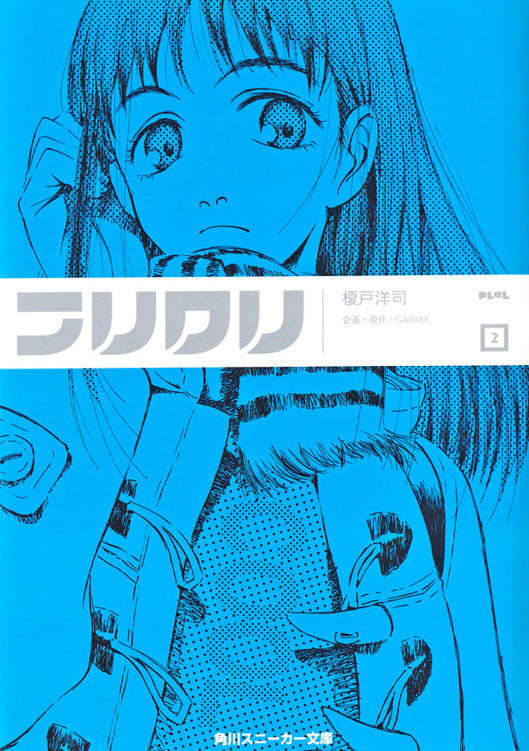
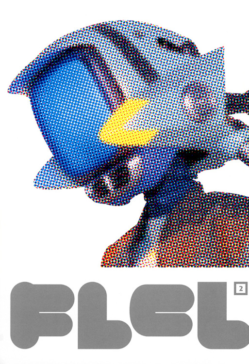
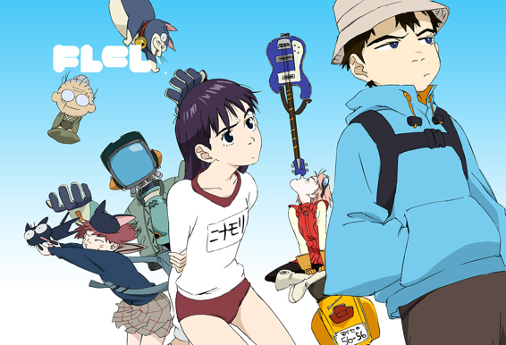
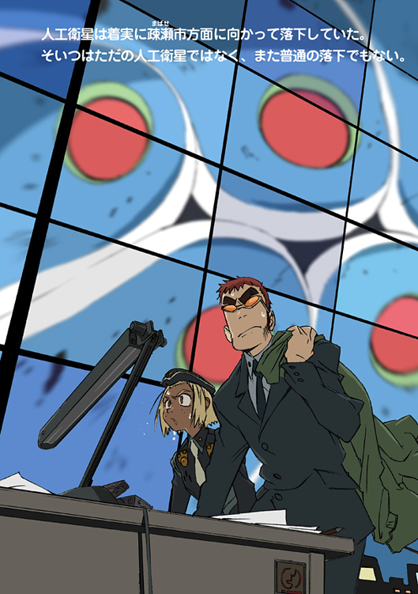
フリクリ
榎戸洋司
企画・原作/GAINAX
角川スニーカー文庫
本作品の全部または一部を無断で複製、転載、配信、送信したり、ホームページ上に転載することを禁止します。また、本作品の内容を無断で改変、改ざん等を行うことも禁止します。
本作品購入時にご承諾いただいた規約により、有償・無償にかかわらず本作品を第三者に譲渡することはできません。
本作品を示すサムネイルなどのイメージ画像は、再ダウンロード時に予告なく変更される場合があります。
本作品は縦書きでレイアウトされています。
また、ご覧になるリーディングシステムにより、表示の差が認められることがあります。
カバーイラスト／鶴巻和哉
口絵イラスト／芳垣祐介
本文イラスト／今石洋之
自分が特別な女の子だと気付いたのはいつのことだったろう。
いや違う、いつ気付いたのでもない、それは最初から特別だったんだ。
生まれたときから、ううん、生まれる前から自分は特別な女の子だった。
ニナモリ・エリは疎瀬小学校の六年生の女子の中では、いちばん背が高かった。だがそんなことはたいしたことではない。実際、五年生にはニナモリよりも背の高い女の子が何人かいた。ニナモリが特別な理由は、もっと他にある。
ニナモリはクラスの女子の中でただ一人だけヘビやトカゲを手でつかめた。だがもちろんそんなことも特別である理由ではない。爬虫類なんてかわいいものだ。あんなの恐がる方がどうかしている。ニナモリが特別な理由は、もっと他にある。
四年ほどまえ、そう、ちょうど小学二年生にあがったばかりの頃、ニナモリは広告のモデルをしたことがある。それは学習机の広告で、ニナモリは机の上で教科書を開き、にこやかにカメラマンに微笑んでみせた。その広告はいちおう全国で売られる学習雑誌に掲載された。
関係者の大人たちに、モデルとしてのニナモリはとても評判が良かった。表情のつくり方がすでにプロだね、一流モデルなみだよ、ほんとかわいい、アイドルのオーディションとか受けてみればいいのに。それは楽しいできごとだったが、結局ニナモリがモデルをすることはそれから一度もなかった。無責任に自分をほめていた大人たちが、実は父親の機嫌をうかがっていただけであることを知ったからだ。ニナモリが広告のモデルに選ばれた一番の理由はなによりも父親の威光だった。〝やってあげる〟ことと〝やらせてもらう〟ことはまったく意味が違う。ついでに言えば、仕上がった広告写真のできもあまり良くなかった。使用されたショットのうつりはひどかった。もっと可愛く撮れてたのがあるはずなのに、雑誌のページで歯を見せて微笑む自分は馬鹿のように見えた。ホントハトクベツナンカジャナイノカモシレナイ。こんな広告を作るセンスのない大人たちにほめられても意味はない。ニナモリが特別な理由は、もっと他にある。
自分がわりと可愛いことをニナモリは自覚していた。女の子は背が高いとコンプレックスをもつというが、ニナモリに限ってそんなことは全然なかった。むしろ休みの日などは思い切りヒールのある靴やサンダルを履いて、より高く見せようとした。おそらくクラスの男子の半数くらいは自分のことが好きなんじゃないだろうか。だって自分がいちばん輝いてるから。ホントハトクベツナンカジャナイノカモシレナイ。自分はきれいで頭が良くて学級委員長だ。担任の先生も自分のことは特別に見ている。ホントハトクベツナンカジャナイノカモシレナイ。そしてなにより、ニナモリの父親はこの疎瀬市の現市長である。ホントハトクベツナンカジャナイノカモシレナイ。ホントハトクベツナンカジャナイノカモシレナイ。ホントハ......。
──うるさい！
ときおり聞こえるいやな声。
世の中にはたまにいやなものがある。いやなことがある。いやなやつがいる。
その朝、ニナモリは車で学校にむかう途中だった。
自動車による送迎は病気やケガのとき以外は校則で禁止されていたが、人目につかない通りで降りれば問題はない。もちろんニナモリは誰かにみつかるようなヘマはしない。
正面の信号が赤になり、運転していた女はブレーキを踏む。そしてコンパクトを取り出して簡単に化粧直しをすると、手早く香水をスプレーした。
後部席に座っていたニナモリは嫌悪に顔をしかめ、窓ガラスを開ける。
世の中にはいやなものがある。いやなことがある。いやなやつがいる。
運転している女は、ニナモリの父親の秘書だった。ここ二年ほどはいつも父の側にくっついている。化粧のハデな女。香水のつけすぎで、すでに嗅覚がおかしくなっている女。
「感心しちゃった」
そのいやな女がいやな声で言う。
「冷静に話を聞いてあげて。あれでも市長は心配してらしたのよ」
「............」
昨夜ニナモリは、父親から、母親と別れるかもしれないという話を聞かされたのだった。
父さんは今も母さんのことを好きだ。けれど、このままでは二人ともうまくいかない。父さんはいま市長だから、公に離婚はできない。いろいろとうるさいからね。でも、とりあえず離れて暮らすことになるだろう。別居ってやつだ。そういう大人の事情、わかるよね......。
せめて申しわけなさそうな顔をしてほしかったのに、どこか嬉しそうだった父。
そしてニナモリが一番いやだったのは、その話をするとき、あたりまえのように父親の傍らにこの秘書の女がいたことだ。
「だってああいうのは、当人同士の問題じゃないですか」
とニナモリは興味なさそうに言う。
「偉いわね。私がエリさんくらいの頃は、まだ本当に子供だった」
「どっちも別れたいって言うんだから、しょうがないですよ」
信号が青になり、女はシフトチェンジして車を発進させる。そのレバーを操る手つきにすらニナモリは吐き気をおぼえた。
本当は、こんな女と二人で車に乗りたくはなかったが、玄関のドアをあけると、こいつは上機嫌で待ち構えていたのだ。
車で送ってあげる、とそう言った。
ニナモリが両親の別居に異を唱えなかったことが、よほどお気に召したらしい。
どうしてオマエなんかとドライブしなきゃならないんだ、汚らわしい。ホントはそうどなりたかった。
けれどニナモリは、女がこの車をわがもの顔で乗っていることも気にいらなかった。
これは先月、父が買ったわが家の車だ。だがこの女は、すでに自分のもののように乗り回している。自分のお気に入りのＣＤを揃え、趣味の悪いマスコットを飾り、自分の香水でマーキングしている。
送ってあげる？ 冗談じゃない、あんたはあたしの雇われ運転手よ、使用人でしかないのよ、あたしが命じるままに走りなさい。そんな意味をこめて、ニナモリは助手席ではなく後部席についたのだ。もちろん、この馬鹿な女はそんな意図には気づかないだろう。こいつは本気でニナモリが両親のことには無関心だとか思ってるようなやつなのだ。
「しっかりしてるなあ」と女は感心してみせる。「でも大丈夫よ。お父さんのイメージを落とすようなことにはしないから」
「安心してます。秘書さん、有能そうだから」
ニナモリは今度こそあからさまな皮肉をこめて言う。
「ゆうべ泊まりだったのに、それ昨日と違うスーツでしょ」
「あら、よく見てるのね」
しかし、秘書はニナモリの皮肉などこたえないらしく、余裕で微笑んでみせた。
女が昨夜、朝まで父親の部屋にいたのをニナモリは知っている。両親の別居の原因はまちがいなくこの女である。
初めて市長に当選したとき、父親が母親の手を握っていた光景をニナモリはおぼえている。手を握って感謝していた。仲は良かった。両親の仲は良かったのだ。ほんのささやかなことでいい。もしまた一緒に楽しいことをすれば、きっと家族は昔のように戻れる。そう、この女さえ邪魔しなければ......。
「あなたこそ、それ、なんの服？」と女が訊く。
ニナモリは膝の上に、なにか衣装の入った紙袋をのせていた。
それはカラバ侯爵の衣装である。
「文化祭で劇やるの。あたし、主役に選ばれたんだから」
苦しみのときこそ、人は大きく成長する。
ニナモリ・エリの人生で一番つらい数日が、これから始まろうとしていた。
これはカラバ侯爵のふりをした女の子の物語である。
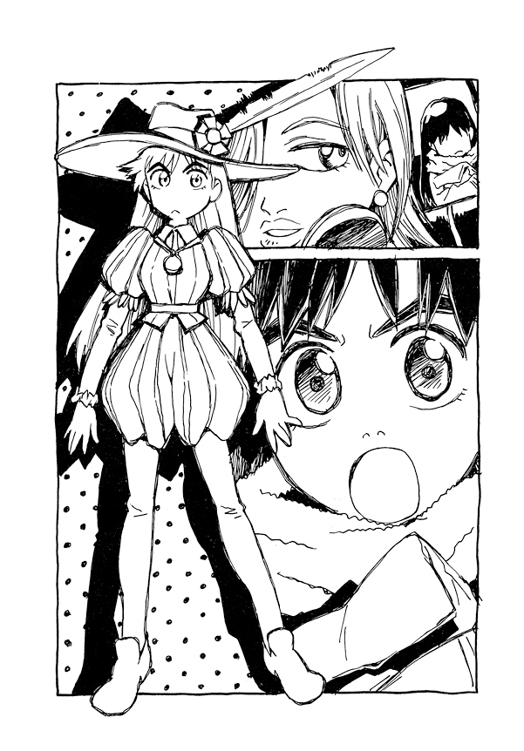
ところで──。
幸福の種類は限られているが、不幸には無限のバリエーションがある。ここにもう一人、ニナモリのクラスメートで、ある意味では彼女よりも不幸な男の子がいた。実際、先月くらいから彼は自分のことを世界でいちばん不幸だと思っていた。
もちろんそれはナンダバ・ナオ太のことである。
登校のため、カバンをさげて家を出てきたナオ太の頭には野球帽があった。
そしてその野球帽こそ、ナオ太の現在の不幸と深く関係していた。
ナオ太の家はパン屋を営んでいた。パン屋といえば朝はそれなりに客がいるものだが、ここ『製パン・シゲクニ』にその姿はない。あまり流行っていない店なのである。
店先の小さな駐車場にはベスパがとめてあり、その傍らには気楽に口笛を吹きながらしゃがみこむ女性の姿があった。愛車のスクーターの故障部分を熱心に調べている。
ハルハラ・ハル子だ。
彼女は先日からこのナンダバ家に家政婦として住み込んでいるのである。
「おい、自称お手伝い」
とナオ太は声をかける。
聞こえているはずのハル子は、しかし気づかぬ素振りでベスパのエンジンをかける。大仰にアイドリングの音に耳を傾けてるのは、どうやら声をかけたナオ太をからかっているらしい。あなたがそこにいることにあたしはまったく気づかないわ、というジェスチャーである。
「家政婦！」
ナオ太はつい熱くなり、声を大きくする。クラスではクールで通っているナオ太も、このハル子という女にかかると、どうも過熱ぎみになるようだ。
「メイド！」
ハル子はあいかわらず聞こえぬ素振りでエンジンをふかしつづける。
「宇宙人！」
としかしナオ太がなかばあきらめ半分に口にすると、ようやくハル子は振り向いた。
もちろんナオ太は〝この宇宙人のように変な女め〟という意味で毒づいたのだが、普段はどのような悪態にも鉄面皮なハル子が、妙に過剰な反応を示した。
「......なに？」
「部屋のガラクタ、なんとかしてよ」とナオ太は言う。
ハル子は家に来たその日からナオ太の部屋の二段ベッドに寝起きしていた。そしていまやその部屋は、ハル子の持ちこんだバイクの部品が散乱し、文字通り足の踏み場もない状態になっていた。
「いいじゃん」とハル子は言う。「お店だって似たようなもんなんだし」
見れば、確かにその客のいないパン屋の店内には、ダンボール箱がところせましと積み上げられていた。箱にはみな印刷所の名が記してある。
ナオ太はそれらダンボール箱の山を見て深くため息をつく。
──また売れない同人誌、刷ったのかよ。
「モンちゃん、ジャーナリストなんだってね」
「......モンちゃん？」
ハル子の言うモンちゃんとは、どうやら父・カモンのことらしい。
ナオ太の父親カモンは、この地方都市疎瀬市に来る前は、中央の出版社で編集者をやっていたという。パン屋を営む現在もいまだにそのころの仕事にこだわっていて、ときおり自費出版の雑誌をつくっては自己満足にひたっている。まったく無駄な出費と労力だ、とナオ太は思う。ま、無駄な出費といえば、このハル子の雇用こそ最たるものだが。
──なんにしても〝モンちゃん〟はやめろ......。
アイドリングしていたベスパのエンジンが小さな破裂音とともに黒煙を吐き、停止する。
ハル子は再びしゃがみこんでエンジン部分をいじりはじめる。
「性能の良さそうな部品ほどクラッシュするまでわかんないのよねえ......」
「ガラクタ」と捨てゼリフを吐き、ナオ太は登校しようとするが──ハル子の油まみれの腕が、いきなり背後からその首をしめる。
「......苦しいって」
「今日もその似合わない帽子、かぶってくんだ」
ハル子はナオ太の帽子をひょいととる。
すると──
ナオ太の頭には〝新しい角〟が生えていた。それも双つ。それは、どう見ても猫の耳に見える。もちろんその〝ネコミミ〟こそが、ナオ太をいま世界でいちばん不幸にしている元凶だ。
それは一昨日の夜中に、いきなり生えてきたのだった。これを隠すため、ナオ太は昨日も一日中、ずっと帽子をかぶっていた。夜寝るときもだ。やっかいなことに、この〝ネコミミ〟はおさえこんでなければどんどん大きくなるのである。
二度あることはなんとかというが〝このてのもの〟が出てきたのは、ナオ太にとってこれで三度目である。おそらく全世界を探しても頭からネコミミの生えてる男の子なんて他にはいないだろう。
「何度見ても面白いよね、これ......いいねえ、このさわりごこち、フサフサしてなんか癒されるわ、アルファ波っつうの」
「さ、さわんないでよ」
ハル子が面白がってそのネコミミを撫でると、ナオ太はあやうくその場にくずれて座り込みそうになる。どうやらそのネコミミに触れられると体の力が抜けるらしい。（なんだか気持ち良さそうではある）
「じゃ、今日の夕方」
と言ってハル子は帽子をナオ太の頭にもどす。
「夕方？」
「一緒に買い物に行くんだろ」
「買い物？」
──なんの話だ？
「いつものカレーじゃないとダメなんだろ」
ああ、とようやくナオ太はハル子の言ってることに合点がいく。
昨夜、ナンダバ家の夕食はカレーだったが、ハル子のリクエストによりふだんとは違うカレールーが使われた。それは超激辛味で、ナオ太の口にはあわなかった。というより辛くて一口も食べられなかったのだ。実はナオ太は、市販されているカレールーの中でももっとも甘口の『星の王子様カレー』しか食べられないのである。そして『星の王子様カレー』は、この疎瀬市では街はずれにある小さなスーパーマーケットでしか手に入らないのだった。
だったらそのスーパーマーケットの場所まで案内しろよ、とかハル子が言ってたような覚えはある。だがナオ太はハル子が本気で買い物に行くというのに少なからず驚いていた。いまだに彼女が家政婦らしい仕事をしたのを一度も見たことがなかったからだ。昨夜のカレーにしても、ハル子の要望によりロボットのカンチが作ったのである。
ロボット・カンチ。
驚くべきことにナンダバ家にはロボットもいるのだ。テレビモニターのような頭をした人型のロボット。
それはナオ太の頭から出てきた一本目の角である。
先日、ナオ太の頭から生えてきた角は実はロボットの一部であり、それがついには〝抜け出して〟しまったのだ。そう、幸福の種類は限られているが、不幸には無限のバリエーションがある。
カンチと名づけられたその不条理なロボットは、けれどハル子などよりよほど家政婦らしく働いている。今も二階のベランダでナオ太とハル子を見下ろしながら布団を干していた。
「遅い！」
教室の壁時計を見ればまだ遅刻にはだいぶ余裕のある時刻だが、ナオ太が机のうえにカバンを置くやいなや、ニナモリは文句を言う。なんだか真剣に怒っているようだった。
「朝から機嫌が悪いね、委員長」
「昨日言ったよね、朝の練習にもちゃんと出てって」
「ああ......」
そういえば、近く行われる文化祭で、ナオ太のクラスは演劇をやることに決まったのだった。三日前の学級会のことだ。けれどどうせ練習をサボって誰かに押しつけるつもりでいたナオ太は、話半分にしか聞いていなかったのだ。
だいたい出演するのは十人ほどなのだから、わざわざ自分が出ることもなかろう、と思っていたし、なによりナオ太の放課後には〝大事な用事〟があるのだ。
「わかってる？ ナオ太君は主役なんだよ」
「主役はおまえだろ。あんなの誰でもできるじゃん。おれパス」
「投票で決めたんでしょ、ナオ太君が猫の役だって」
「............」
ふと頭を気にして、ナオ太は帽子に手をやる。今日も一日、授業中も脱ぐことはできないまさにそれは〝角隠し〟だ。担任には頭にケガをしているからと告げてある。
猫、とナオ太はつぶやく。
そういえば、クラスの投票で決まったナオ太の配役は猫だった。
──猫役なんてあてられたから、このネコミミは生えてきたのかな？
「放課後の練習はさぼんないでよ」とニナモリは言う。
演劇なんて面倒くさいだけのこと、なんでそんなに熱心なんだろうとナオ太は不思議に思う。それは委員長としての責任感だろうか？
一時間目は国語の授業だった。
国語。それは教科書のすみについパラパラマンガを描き、その演出やクオリティなどに熱中してしまう退屈で怠けやすい科目である。そしてその作業にあまり熱中しすぎると、将来ガイナックスやプロダクションＩ・Ｇで働くことになるのだ。（え、余計なこと言うなって？ はいはい......）
前の席のマサシが、教師の目を盗んでナオ太に小冊子をまわしてきた。
それは小さなサイズの安っぽいミニコミ誌で『ＣＯＭＥ ＯＮ ＭＡＢＡＳＥ』と誌名が印刷されている。
三ページ目、とマサシが小さな声で言う。
ななめ前に座っているガクも、見たら驚くぞ、という表情でふりむいている。
まあ、だいたいこういうものを見つけて学校に持ってくるのはガクである。いつもくだらないものをみつけてくる。おそらくこのミニコミ誌もそうだろう。
だが教えられたページを開いて、ナオ太は眉をひそめた。
「これって......」
そこに掲載されてる内容は、予想以上にやばいものだった。うかつに〝このクラス〟で回し読みしていいものではない。
それは現疎瀬市長──つまりニナモリの父親の汚職と、そしてプライベートのスキャンダルを暴露するスクープ記事だった。
ナオ太は、思わず少し離れた席の委員長を見た。
「すごいでしょ」とマサシが言う。「栄町のモニワ屋に置いてあったって」
「モニワ屋？」
「ほら、あの寝てるような婆さんがひとりで店番しててチェリオがいっぱい並んでる......」
「チェリオ？」
「そこ、なにやってんの！」
担任のミヤジに見つかり、まずい、とナオ太は思った。いや、回し読みを見つかって叱られることがではなく、ミニコミ誌がミヤジの手に渡るのがまずいと思ったのだ。
ナオ太のクラスの担任であるミヤジは、まだ若い女性教師である。いつも張り切ってるのはいいのだが、どうも融通や機転がきかない。子供のようなところがある。
「なんです、これは」
ナオ太の手からミニコミ誌をとりあげると、ミヤジは顔を赤らめて声をあげる。
「やだこれ、ちょっと......これ読んだ人は全員立ちなさい！」
ガク、マサシ、ナオ太の三人が、おずおずと立ち上がる。
もちろんもっと大勢が見ているはずだが、こういう場合は現行犯しか罪を問われないのがルールだ。ガクもマサシも他の者の名を告げ口するようなマネはしなかった。
立たされる三人の情けない姿を見て、無関係な連中が笑っている。
ミニコミ誌を見てミヤジは絶句していた。やはりお嬢さま先生には少しばかりどぎつい内容であるようだ。
「禁止禁止、今日から六年一組は下品禁止令！」
やあねえやっぱりエッチな本なんだ、と女の子たちはささやきあって笑う。ニナモリも笑っている。
お願いだから、とナオ太は心の中で思う。もうそのミニコミ誌はどこかにしまってくれ。僕たちはこうして立たされたままでいいからニナモリにだけは見せないでくれ！
ナオ太は普段からそれほどニナモリに好意をもってるわけではないが、それでも〝こんなこと〟でクラスメートが傷つくのは見たくないと思う。そして腹を立てる。まったく、どこの誰がわざわざあんな嫌な本をつくるんだろう......。
「だいたいこんな下品なものこっそり読むなんて、ニナモリさんに失礼でしょ！」
ナオ太の悪い予感は的中してミヤジが言い放つ。やはりこの教師は子供だ。それも戦場で大声をあげてわざわざ敵に居場所を教えてしまうタイプだ。
ニナモリはそのミニコミ誌に自分のこと──というより父親のことが書かれていることにもちろんすぐ気づいた。頭はいいのだ。
『値打ちのありそうなものはみんな兄さんにとられ、残ったのはネコだけ。あ、いま、ネコなんかもらってどうすんだ、とか思ったアナタ。そうカリカリしない。落ち着いてじっくりまわりを見回せば、きっといいものがみつかるんじゃないかニャア......』
そして放課後。
結局、とりあげた小冊子をミヤジは見せてくれなかった。
けれど見ないわけにはいかないとニナモリは思う。だから劇の練習をきちんと終えてからそのモニワ屋があるという栄町に向かった。
ガクやマサシは口ごもるので、他のクラスの男子からようやくそのミニコミ誌が置いてあるという店の名を聞き出したのだ。
教えられた場所にちゃんとその店はあった。駄菓子商いモニワ屋、という古びた看板のかかった、今にもつぶれそうな小さな店だった。
店先には車が一台停車していた。そして、どうやらその車の持ち主らしい男が店番の老婆となにか話しこんでいる。いや、話しこむというより、男が一方的にまくしたてているようだ。目付きの悪い、見るからにいかがわしい風貌の中年男だった。
「......大反響だろ、これ。言ったろ、地方自治にもジャーナリズムは必要なわけよ。明日あたり正義のミニコミ誌『ＣＯＭＥ ＯＮ ＭＡＢＡＳＥ』欲しさに、ここの賞味期限切れのチェリオなんて全部売り切れるくらいの客がくるね」
「うちには賞味期限切れのものなんて置いてないよ」
「どうよ、もうちょっとひきとってくんない？ あと百、いや八十......」
驚いたことに、どうやらその男は、あのミニコミ誌をつくった張本人らしい。
男は、傍らで自分の顔を凝視しているニナモリに気づいた。
「やあ、お嬢ちゃん......これだろ」
したり顔で笑うと、男はニナモリにそのミニコミ誌を一冊さしだした。
「タッくんもついに学校をサボったんだニャア、悪い子だニャア、ペロリ」
マミ美がナオ太の首筋をなめる。
そこは疎瀬橋近くの堤防である。
あの火事の夜以来、ナオ太とマミ美の二人は、なんとなくまた放課後、ここで待ち合わせるようになっていた。そして再びあの一種の性的関係が続いていた。それが、演劇の練習をさぼるナオ太の〝大事な用事〟だった。
ほとんど毎日のように、頰に口づけされ、うなじをなめられ、歯をたてられ、そしてキスマークをつけられている。
「授業はさぼってない。だいたい劇の練習なんて成績には関係ないんだから」
「マミ美も学芸会とかやったスよ。すっごい恥ずかしかったけど、ちょっと嬉しかったっス」
「なにが嬉しいんだ？」
「お父さんお母さんが一緒に見に来てくれたっス。思い出すっス」
「おまえ、なんの役やったんだ？」
「幼稚園のときはセーラーマーズ。小学校はマッチ売りの少女。中学は八百屋お七」
「どうして〝燃やすシリーズ〟なんだ......」
脳裏に甦る炎の光景。
当然ながら二人は、あの夜のことを思い返していた。
結局マミ美が警察に捕まることのなかった、あの火事の夜。
放火犯人は今も手配中だが、あれ以来しばらく火事はなく、事件はこのまま迷宮入りしそうだ。
──いや、そうでなきゃいけない。犯人は捕まっちゃいけないんだ......。
マジな口調でマミ美がつぶやく。
「タッくんが助けてくれたんでしょ？」
「なに？」
「この間の夜っスよ。カンチ様を運転して、めちゃカッコよかったっス」
「うん......」
曖昧に言葉を濁すナオ太。
いずれはあの夜のことにふれなきゃと思いながらも、実は二人は今日までずっとその話題をさけてきたのだった。ナオ太の頭からロボットが出てきたこと、放火犯がどうやらマミ美であるらしいこと、そしてその事実を知ったナオ太がどうするつもりなのかなど、二人は大事なことにはずっと触れないまま、ずるずるとこの〝遊び〟をつづけていたのだ。
だが考えてみればそれもやむないことで、二人は大事なことに触れずにただその日を享楽的に過ごすことにあまりにも慣れすぎていた。そもそも二人のこの〝遊び〟は、大事なことから自分の心を背けるために始まったのだ。もちろん、兄タスクのこともあれからずっと保留になっている。
──兄ちゃんがアメリカで恋人をつくったことをやはりマミ美はもう知ってるんだろうか？
それを確かめる勇気が、今日のナオ太にはなかった。だが、マミ美がタスクのことをすべて知った上でとぼけている可能性は高い。
マミ美は本当はぜんぶ知ってるのかもしれない。
とぼけているが知ってるのかもしれない。
ただ──あの夜のことでは、マミ美はひとつ大きな誤解、というか思い違いをしていた。
いや、それが誤解なのかどうか、本当のところナオ太にもよくわからないのだが......。
マミ美は、あの夜ナオ太がカンチを操縦したと思っているのだ。
ナオ太がまるでパイロットのようにロボット・カンチを操って戦い、自分を助けてくれたのだと思っているらしい。
......カンチを運転して、めちゃカッコよかったっス。
しかし実のところ、あの夜のことはナオ太もよく憶えていないのだった。
カンチに取り込まれたあのとき、たしかにナオ太は暴れる片腕ロボットからマミ美を守りたいと思った。守らなければとあせった。
その自分の思いが神様（みたいなもの）に聞き届けられてカンチと一体化し、あの凶暴なロボットを倒したのだと、できればナオ太もそう思いたかった。マミ美のために戦ったと思いたかった。
けれど現実にはナオ太は、カンチに取り込まれたあとの記憶がどうも定かではないのだ。
取り込まれたあと、なんだか暗い空間を漂っていたのは覚えている。
その暗闇の中で自分の体がなにかに固定されたような気もする。
だが、どうもあやふやだ。
「ありがとう」とマミ美は言う。
マミ美は、あの一件をヒロイックなできごとだと思っているようだ。
そして礼を言われると悪い気のしないナオ太も、記憶こそ曖昧だが、やはり自分こそがカンチを操ってマミ美を救ったような気がしてくるのだった。とにかく、マミ美を守りたいと一心に念じていたのは確かだ。
あの夜以来、マミ美は前ほどカンチのあとをつけまわさなくなった。
いまだにカンチのことは大事な味方だとは思ってるようだが、ややミーハー熱は冷め、その関心の多くは再びナオ太に集中している。結果、今日もナオ太の首筋のキスマークはすさまじく増えているのだ。はっきり言ってナオ太はこの状況に甘えていた。
マミ美がナオ太の帽子をひょいと取る。
あっと慌てるが、ときすでに遅く、ナオ太のネコミミはマミ美の目にさらされる。
──しまった......。
たちまちマミ美はうっとりとした表情で、なあにコレ、めちゃラブリーっスね、いいっスね、とそのナオ太のネコミミを溺愛しはじめた。
「フサフサ......めちゃ楽しいっス」
もはやネコミミの存在理由そのものには疑問を持たれないあたりに自分の日常性の崩壊を感じるナオ太であった。
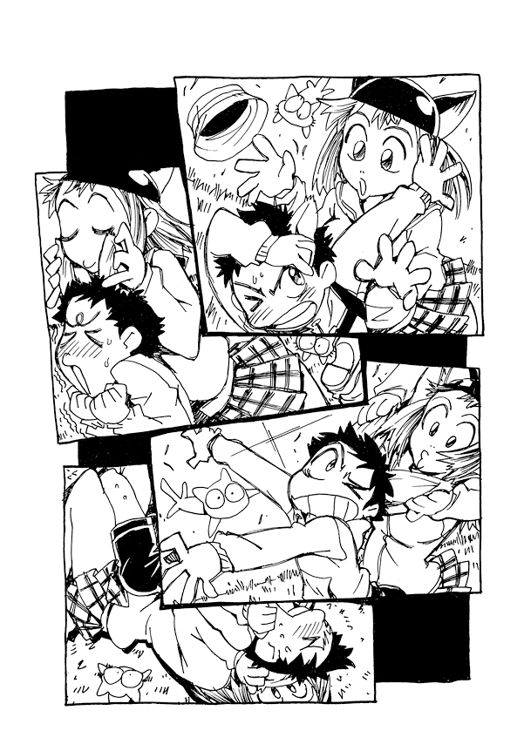
ミニコミ誌『ＣＯＭＥ ＯＮ ＭＡＢＡＳＥ』を手にして家に帰るニナモリの足取りは重かった。
あのいかがわしい男は、もちろんニナモリが当の市長の娘であることなど想像もしないでこのミニコミ誌をくれたのだろう。それにしても、ランドセルを背負った女の子にこんな悪質な小冊子を渡すなんて、あの男はかなり変質的なところがあるのじゃないだろうか。
ミニコミ誌は想像以上にひどい内容だった。
よほどニナモリの父親が嫌いなのか、あるいは恨みがあるのか、仕事とプライベート両方でのスキャンダルをくわしく調べあげ、あげつらってあった。
まず仕事に関してはＭＭ工場誘致のおりに不動産会社と共謀して不正に収入を得ていたことが書かれていた。現疎瀬市長はそのときの不正な土地の売買で稼いだ成金市長だという。その不正な汚い金で市長の椅子を買ったのだ、と。
そしてプライベートではやはり秘書の女性との愛人関係が暴露されていた。ご丁寧にも彼女のマンションから二人が出てくる証拠写真付きで市長の破廉恥を糾弾していた。
文章のひと文字ひと文字に悪意が感じとれて気持ちわるかったが、指摘されてる事柄はほとんど事実なのだろうとニナモリは思った。
憂鬱な気持ちになる。
そのミニコミ誌は、そしてクラスで回し読みされてしまったのだ。
醜悪な父親のスキャンダルをクラスのみんなに見られてしまった。
ナオ太君にも見られてしまった。
ナオタクンニモミラレテシマッタ。
やってらんない。
ただ、このときニナモリにはひとつの考えがあった。
少なくとも、これであの嫌な女秘書は家から追い出せるわけだ。
自分は有能な秘書だからお父さんのイメージを落とすようなことだけはしないとかいう寝言を今朝も口にしてたっけ。見てるがいい、このミニコミ誌の失態を叩きつけて、今日こそ家から追い出してやる。思い知らせてやる。そのことに関してだけはこの小冊子を作ったあのいかがわしい男に感謝したいくらいだった。
けれどニナモリはまだまだ事態の深刻さに対する理解が甘かった。
「......なに？」
家の近くまで帰りついてその状況を目にしたとき、ニナモリはその場に棒立ちになった。
自分の家の玄関前に大勢の人間がひしめいていたのだ。十数人はいる。どうやらマスコミ関係者らしい。カメラマンも何人かいる。まるで亡者のようにニナモリの家の玄関に群がっている。
呆然としていると、路地から小走りに女が一人やってきた。変装のつもりらしくサングラスなどかけているが、それこそあの秘書の女であった。忘れもしない嫌な香水の匂いが漂う。
秘書もニナモリに気づいてふと立ち止まる。
「あらバカね、もう裏口もダメよ」
「............」
「こんなところにいたらやばいわよ」
「さすが、逃げ支度も万全ですね」とニナモリは嫌味を言う。
「大人だから」と答えて、秘書はさっさと逃げ去った。
腹立たしい思いでその背を見送るニナモリ。
──大人だから？
大人だからなんだというんだ、この香水オバケ。
口先だけのダメ大人め。
叩きだしてやろうと思っていた女が、自分からわれさきにと逃げ出していく。
初めて会ったときから直感的にダメなやつだと感じたが、第一印象とは、あんがい相手の本質を見抜くものである。
そう言えばあの女は先月スピード違反でつかまったとき、自分は初めて減点になったとしつこく愚痴りつづけていたっけ。ニナモリの父親がなぐさめていたが、自分はずっと無事故無違反でいるつもりだったのにと、わけのわからない理由で子供のようにすねていた。そしてその程度の違反を警察に叱られたくらいでショックを受ける小心者のくせに、父親とは平気で関係していたのだ。
けれど──そんな女の性格が、ニナモリはある程度理解できた。
そしてニナモリが彼女を嫌いないちばんの理由は、もしかしたらその理解できる部分かもしれなかった。
あの秘書はなんの根拠もなく自分だけが特別だと思っているのだ。
あのミニコミ誌に載っていた写真。父親と腕を組みながら大口をあけて笑っている秘書の顔を見ると、ニナモリはかつて学習机の広告モデルをした自分のバカッぽい笑顔と重なってたまらなく嫌だった。
ホントハトクベツナンカジャナイノカモシレナイ。
いまのニナモリに逃げ場所のあてはなかったが、とにかくマスコミ連中に見つかる前にそっとその場から離れた。
父親の不正な誘致で建ったというＭＭ工場のある丘に、夕日が沈んでいく。
夜になればマスコミ連中も退散するかもしれないとニナモリはわずかに期待する。あるいは父親が事態の収拾になんとか手をうつかもしれない。
とにかく家に近寄れない以上、しばらく街をさまよいながら時間をつぶすしかなかった。
それにしても冷静に考えるほどに情けなくて、つい涙があふれそうになる。悔しくて腹立たしい。
たとえば今あたしが死んだら父親は後悔するだろうか、などと余計なことまで考えてしまう。父親が涙を流して反省するさまを想像するのは、少しばかり気味がいい。けれどすぐに考えなおす。いやいや、だめだ。そんなことになれば、あの亡者のようなマスコミ連中をさらに喜ばせるだけだ。
もしかしたらすでに夕刊やＴＶニュースで、父親のスキャンダルが報道されているかもしれない。
夕暮れの人通りの中、ニナモリは道行く人、すれ違う人たちが、なんだかみんな自分を見ているような気がしてきた。まるで指名手配されているようないたたまれない気分になる。
もっと暗くなるまでひとけのないところで過ごそうと考えた。
川の堤防がいい。あそこなら人気がなくて静かだ。
途中でカレーパンとチェリオを買いこみ、川まで歩いた。
買い食いはダメだ、女の子のすることじゃないと父親にはいつも言われていたが、今日ばかりはささやかな反抗である。
夕闇の川岸には、思ったとおりトンボの姿しかなかった。
ニナモリはコンクリートの堤防に座り込み、ランドセルをおろす。
「......オイラにはもう、帰る家もない。オイラに残されたのは、役にも立たないこのネコ一匹だ」
ふと演劇で覚えたばかりのセリフが口からこぼれる。行くあてがなく途方にくれる悲惨な主人公。その境遇があまりにも今の自分と似ているのに気づき、さらに切なくなる。
しかも芝居より悲惨なのはニナモリには味方がいないことだ。
ニナモリには猫がいない。
けれど、負けるもんか、と思う。
だってあたしは特別なんだ。特別な女の子なんだ。これくらいのスキャンダル、特別な女の子として箔がついてちょうどいい......。
あふれそうになる涙をなんとか堪えて、ニナモリは手にしたカレーパンをひとくち齧った。今日は絶対に泣かないと決意する。
へへんだ。カッコイイじゃん。あのコソコソと逃げ去った口先だけの秘書なんかより、今のあたしはずっとカッコイイ。
「学級委員が買い食いしちゃまずいでしょ」
いきなり近くで聞き慣れた声がして驚く。
ふりむけば、いつのまにかすぐそばにナオ太が立っていた。
どうしてよりによってここにナオ太君が、と多少混乱したが、見慣れた級友の顔はニナモリを少しほっとさせた。これはもしかしたら神様のひきあわせかもしれない。
だが内心の思いを隠しつつ、ニナモリはいつもの委員長口調で言う。
「練習さぼって、なにしてんのよ？」
ナオ太はニナモリが手にしたカレーパンを指さす。
「買い食い、ミヤジにチクっちゃおうかな」
「ナオ太君て、時々、すごい不良じゃないのって思える」
「まあね」と得意気になるナオ太。
「その帽子は似合わないけど」
「............」
口をとがらせムッとするナオ太が、なんだかとても可愛く見えた。
「もしかしたら」と言いながら、ナオ太はニナモリの隣に座る。「家、大変なことになってる？」
「関係ないわよ、そんなの」とニナモリは強がってみせた。
いや、こうしてナオ太が横にいてくれれば、本当に強くなれそうだった。
なんだかどんどん不幸にむかってエスカレートしていく嫌な流れが、少しはまともな日常にもどるような気がした。
ココニイテ。
ココニスワッテイテ。
ズットアタシノソバニイテ。
ふとナオ太は、ニナモリがランドセルの傍らに置いたミニコミ誌に気づく。
「気にすんなよ、どうせそんなの怪文書のたぐいでしょ」
「全部ほんとのことだもん」
でもいいんだ。あたしは負けたりしないから。それにナオ太君もここにいるんだから。
もちろんニナモリは、ついさっきまでナオ太があのマミ美という女子高生と〝遊び〟をしていたことなどは知らない。
二人の傍らをバスが通過し、近くの停留所でとまる。すでにあたりは薄暗かったので、照明のついたバスの車内はなんだか小さく切り取られた別世界のように見えた。
どこかへ行きたい、とニナモリは思う。とにかくここはもういや。どこか、こことは違う場所へ行ってしまいたい。このままナオ太君と二人で。
「あたし、結構、お金もってるんだ。成金市長の娘だから」
気がつけばごく自然に口にしていた。
「ねえ、つきあってくんない？」
「これから？」とナオ太は少し迷惑そうに言う。「どこへ？」
なかばはずみで口にした言葉を、ニナモリはすぐに後悔する。
ほんと、なにを言ってるんだろ、あたし。
「ナオ太君は、長靴をはいた猫でしょ」あわてて照れ隠しで言う。「だったら黙って御主人様の言うことを聞きなさいよ」
「俺はここで人と待ち合わせてんの」
「え、誰？」
「うちのお手伝い」とナオ太は答える。
そう、ナオ太は『星の王子様カレー』の売ってるスーパーにハル子を案内するため、ここで待ち合わせていたのだ。
ダッタラスグイナクナッチャウノ？
再び一人になる淋しさにとらわれてニナモリが黙りこんでいると、バイクの音が聞こえてきた。
「来た来た」と立ち上がるナオ太。
見れば、堤防の中程に作られた小道をベスパが猛スピードでつっこんでくる。それがナオ太の言うお手伝いさんらしい。
しかし、それにしても近づいてくるそのスクーターはあまりに凄まじいスピードだった。
ナオ太はふと、今朝ハル子がベスパを修理していた光景を思い出す。
「まずいかも......」
実際、ベスパは意図的に高速で突っ込んでくるのではなくブレーキが効かないのだった。
さすがにニナモリも身の危険を感じて立ち上がる。
ぐんぐん近づくヘッドライトの光に呆然とするナオ太とニナモリ。
そして──静かな川岸の一場面はいきなり騒々しい事故現場にとってかわった。
「どいてどいてどいて......」
という女の無責任な叫び声が爆音にもまして周囲に響き渡り、堤防でハンドルをとられたベスパはナオ太の期待不安を裏切ることもなく、棒立ちの二人を同時にはねとばしてしまった。
──これでいったい何回目なんだ......。
人間なんでも慣れるものらしく、はねられた瞬間にナオ太はそんなことをふと思い、そして意識を失った。
堤防を転がるナオ太とニナモリの体。
その勢いでナオ太の帽子がぬげてネコミミの頭がとびだし、ニナモリの頭と激しくぶつかる。
すると、ナオ太のネコミミが一瞬だけフラッシュのように光った。
二人をはねたあと、ベスパも派手に転倒した。
ぼやきながら女が起き上がる。
「うー、死んじゃうとこだった......」
「痛い......」
ニナモリはたったいま打った頭に手をやる。大きなこぶができていた。やっぱり今日は人生最悪の日だと痛感する。
見れば目の前にはナオ太が倒れていた。
しかも意識がないようだ。
まさか......。
「ナオ太君！」
思わずナオ太の体にすがりつくニナモリだが、安否の確認よりもまえに、その頭にあるネコミミに気づく。
「......なんだ、これ？」
「さわっちゃダメ！」としかしベスパ女が鋭く制する。
「え？」
「としごろの女の子が、そんなものじかに手でさわっちゃダメ」
「............」
しかしすでにニナモリは、そのナオ太の頭から出ているフニャリとしたものをしっかりと握ってしまっていた。なにしろクラスの女の子でただひとりだけヘビやトカゲを手でつかめるのだから、これくらいは全然平気だ。
それより、この背の高い女はなにものだろう、とニナモリは思う。ナオ太君ちのお手伝いさん？ あたしとナオ太君はたった今この女のバイクにはねられたのだ。
だが事故った女はべつにあわてるふうでもなく、いつのまにかニナモリのカレーパンを拾って平気な顔でむしゃむしゃと食べていた。
「うまいじゃん、これ」
「............」
メチャクチャだ、とニナモリは思った。なんだかしらないが、この女はメチャクチャだ。もしかしたらすごくすごくやばい相手かもしれない。なんか普通の人とは空気が違う。
「ところで、いつまで握ってるの、それ？」
ニナモリの手の中には、まだフニャリとしたナオ太のネコミミがあった。それは確かに妙な手触りだったが、よく見れば、そのネコミミはやはりナオ太の頭から直接生えていた。
ナオ太君の頭からネコのミミが生えてる......？
「これって、なに？」
「見られたかぎりはしょうがないわね」とカレーパンを齧りながら、長身の女は冷たくつぶやいた。
夕闇の中、三人乗りベスパがナンダバ家に向かって走っていく。
ニナモリはいちばんうしろだが、シートにすわるスペースはなく、ほとんど運転している女の背にしがみついているだけだった。かなり危険な走行だ。しかもナオ太とニナモリの二人はノーヘルである。
「こんなのみつかったら、点数なくなりますよ」
ニナモリは運転している女に言ってみた。
「大丈夫」としかし女は答える。「あたし免許もってないから」
「............」
〝見られたかぎりはしょうがないわね〟──このハルハラ・ハル子と名乗った女に凄まれたとき、ニナモリはてっきり口封じのため消されるのかと思った。女は、なにかそれほどやばい相手に思えたのである。
なにしろこの女は意識を失ったナオ太の襟をつかんで立たせ、落ちていた帽子をその頭にかぶせてやったと思うと、次にはためらうことなく乱暴にその顔を平手打ちにしたのだ。それも手際よく往復で数回。まるで暴力が日常のように手慣れていた。そしてナオ太の意識がもどると、その首筋をちらりと見て、また悪いことしてたな、と笑った。
「うるさいな」とナオ太は女にこたえた。どうやら二人はいつもそうしたケンカ腰の態度でつきあっているらしかった。
「大丈夫？」とニナモリが声をかけたとき、ナオ太はあわてて自分の頭に手をやった。どうやらニナモリにネコミミを見られたのではないかと焦ったらしい。一度脱げたとも知らずに頭の帽子を確認すると、素知らぬ顔でおまえこそ大丈夫かよ、と言った。
「はねちゃったし、このまま放っておくわけにはいかないからな、とりあえず連行しよう」とハル子が言った。
それはつまりニナモリをどこかへ連れ去るということらしかった。
「どこ行くんですか？」
「タッくんち」
先日、あの校門の前で待ちぶせていた女子高生と同じように、このハル子という女もナオ太のことを〝タッくん〟と呼んだ。
タッくん、とニナモリも小さくつぶやいてみた。
ハル子は倒れたベスパをおこした。
「さあ乗って」
「また三人乗りかよ」とナオ太が文句を言った。「それ、ブレーキ壊れてるんだろ」
「大丈夫。今度はうまく言いきかせるから。ほらカノジョ、あんたもおいで」
「あたしは......」
「来るだろ。さえないパン屋だけど、なにしろタッくんちだぜ」
ハル子はニナモリの心を見透かしたように決めつけた。
そして結局そのなりゆきにまかせ、ニナモリはこうしてベスパの三人乗りでナンダバ家にむかっているのである。
だが強制連行ではない。
行きます、とニナモリは答えたのだ。
そうだ、どうせ行くあてがないならナオ太君ちに行っちゃおう。
「おまえも来るのかよ」とナオ太は口をとがらせたが、そのすねた感じがまた可愛い、とニナモリは思ってしまった。
ナオ太の家がパン屋であることは当然知っていた。製パン・シゲクニの店の近くまでニナモリは行ったこともあった。そのとき店には誰もいなくて、本当に営業しているのかどうかは不明だったが、もちろんパンを買うために訪問したわけではない。
──ナオ太君のことを意識しはじめたのはいつからだったろう。
好き、というよりは、とにかく気になる男の子だった。可愛くて、生意気で、そしてなにより彼は頭が良かった。特別な男の子に思えた。そう、ナオ太こそ特別な女の子である自分の仲間にふさわしいような気がしたのだ。
最近になって、ナオ太はますます気になる存在となっていた。彼は他の男の子と違って、なんというか、少しミステリアスだった。いろいろ謎めいている。校門前で待ちぶせていたあの女子高生、この乱暴な家政婦、そして──
先ほど見たものがまちがいでなければ、ナオ太の頭には今ネコミミが生えているのだ。
ナンダバ・ナオ太は、頭にネコミミのある人間なのだ。
でも、それってなに？
どういうことなのだろう？
あるいはナオ太の家に行けば、それらの謎の一端にでも触れることができるのかもしれない......。
ベスパを運転する女の背にしがみつきながらそんなことを考えるニナモリは、そういえばついさっきまでの思いつめた気分をしばし忘れていたことに気付き、苦笑した。
製パン・シゲクニの前まで来ると、止まれえと叫んで、ハル子はブーツの踵でベスパの脇腹を蹴った。蹴られたベスパは、まるで驚いたようにいきなり前輪が持ち上がって──つまりウイリー状態となり──減速してとまる。まさにうまく言いきかせて停車した、という感じである。
ナオ太とニナモリはそれを乱暴な運転だとは思った。だが、その停車方法がバイクの一般常識では考えられないどころか、実はこの三次元空間の物理法則をすら無視していたことにまでは気づかない。
店先にはカレーの匂いがしていた。
まだ昨日のやつ残ってるのかよ、とナオ太が文句を言う。
晩飯食ってくだろ、と有無を言わせない調子のハル子に背中を押され、ニナモリは居間に通される。
それはしばらく行き場のないニナモリにはありがたい申し出ではあった。
食卓を囲んで、ナオ太の父親と祖父らしき人物が座っていた。
おじゃまします、と頭を下げるニナモリ。
だが頭をあげたニナモリは、ナオ太の父親の顔を見てあっと声をあげる。
そこにいたのはまちがいなくミニコミ誌を手渡したあのいかがわしい男だった。
「やあさっきは」とカモンは言う。「まあ座りなさい、なにもないがちょうど夕食だ」
「............」
なんてことだ、とニナモリは思う。てっきり変質者だとばかり思っていたのに、この男はナオ太君の父親だったのだ......。
「ナオ太のガールフレンドか」と祖父シゲクニが言う。「なかなかやるのう」
「ハル子がはねたんだよ」とナオ太が説明する。
「はねた？」
カモンが不安な表情になる。それは見ていておかしいほどの狼狽ぶりだった。
「はねた、とは？」
「まあまあ、細かいことは気にしないで」とハル子。「ほら、ごはんにしよ」
その一言で、とりあえず食卓を囲んで夕食がはじまった。
よその家の食卓風景というのはニナモリにとって少々めずらしいものだった。それに家族そろって食べる夕食というのも、最近の彼女には縁のない場面である。ミニコミ誌の父親は気になったが、とりあえず行儀よくしなければと思った。
けれど──ニナモリはその場ですぐに泣きだしてしまった。いや、悲しくて、ではない。カレーの辛さにである。
辛い！
辛い辛い辛い辛い辛い......。
ナオ太の言うとおり、それは本当に凄まじい辛さだった。
さきほどのカレーパンなどとは、桁違いの──それも二桁違いの──辛さである。なんというか、人間の食べ物の限界をわずかにこえていた。
そして泣きながら、そのことでニナモリはまたも苦笑する。
考えてみればおかしかった。なんとか泣かずに今日一日を堪えてきた自分が、まさかこんなくだらないことで涙を流すとは思いもしなかった。けれどこればかりは耐えようもなく涙があふれ、無理して食べつづけると頭痛すら感じる強烈な辛さだった。
「やはりいけますな、お義父さん」
言いながら匙を口に運ぶカモンも相当無理しているようだ。
シゲクニもまた苦悶の表情で、それでも耐えて食べている。
「まさに、インド人もビックリじゃ......」
カモンとシゲクニの二人が文句も言わず食べているのは、どうやらハル子の目を意識してのことらしい。親子間での恋の鞘あてが延々と続いているらしく、おいしいでしょ、という彼女の言葉に、二人は異をとなえることができないようだ。
「辛いの好きでしょ」とハル子がニナモリにも言う。「マンハッタン味だよ。『星の王子様・ニューヨークへ行くカレー』」
「ニューヨークまで行かなくていいんだよ」とナオ太が毒づく。ナオ太だけは最初からそのカレーを口にせず、銀シャリと福神漬のみを食べていた。それは一種の抗議行動らしい。
「子供ね、これが大人の味でしょ」としかしニナモリはついナオ太に強がってカレーを口に運んでしまう。同級生を自分より子供扱いしたいという見栄のため──カラバ侯爵はその超激辛カレーをまるで普段から食べなれてるように装いました。
「おーい、み、水を......」
シゲクニがついに音をあげると、隣の台所で物音がした。他にも誰かいるらしい。
誰だろう、もしかしたらあのマミ美とかいう女子高生だろうか、とニナモリは訝るが、コップを盆にのせて居間に現れたのはカンチだった。
もちろんさきほどカモンを見たとき以上にニナモリは驚く。
「......なにこれ？」
無理もない。なにしろそれはロボットなのだから。二本足と二本腕の人型ロボット。しかもなんだか古びたジャケットを着ていて、妙な人間くささすら備えている。
ロボットは水の入ったコップをシゲクニに差し出す。
「なんなんですか、コレ......」
「テレビですよ、テレビ」とカモンが説明する。
たしかにその頭部はテレビモニターに似ていた。
「なんで歩いてるの？」
「だから、テレビウォークマンじゃないのかな」
カモンはさらに怪しげな説明を付け加えた。
テレビウォークマン？
ソニーはこんな製品まですでに市販しているのだろうか？
「ところで」とカモンがニナモリに訊く。「体の具合はいかがです、市長のお嬢さん」
「............！」
その言葉の意味に気付いて、ニナモリは続けてショックを受けた。
ではこのナオ太君のお父さんは、自分が市長の娘だと知っていたのだ。知っていながら、あの市長のスキャンダルを暴くミニコミ誌を手渡したのだ。
ニナモリはカモンになにか不気味なものすら感じた。ナオ太の父親だと知らなければ、とっくに逃げだしているだろう。
「詳しいじゃないか」とナオ太が少し驚く。「ニナモリのこと知ってるのか？」
もちろんナオ太は単純にカモンがニナモリを知ってることが意外だったのであり、あのミニコミ誌を作ったのが自分の父親であることまでは知らない。
『ＣＯＭＥ ＯＮ ＭＡＢＡＳＥ』──とは、『カモン・疎瀬』、すなわちカモンが作る疎瀬市のミニコミ誌という意味なのだった。
いかがわしい笑顔でカモンがニナモリに言う。
「いまや有名人じゃないか、ねえ」
「............」
〝いまや有名人〟になったのは、他ならぬあのミニコミ誌のせいである。なのに平然とした顔でぬけぬけとそんな言葉を口にできるこの男はもしや凄まじい悪意の人物ではないだろうか？
けれどカラバ侯爵はこの程度のことでは動じませんでした。
「いえ、たいしたことありませんから」
とカモンの悪意に、ニナモリは謙遜で応じてみせた。
ハル子がまた軽く言う。
「パン屋のバイクにはねられたなんてあんまり言いふらさないでよ」
「じ、人身事故......」
カモンは口ごもり、その憎らしい笑顔が再び不安な表情となった。
どうやらハル子の言葉は、調子にのるカモンへの牽制であるらしい。
市長のスキャンダルを暴く正義の出版活動をしたつもりのカモンに、そのあんたの家の家政婦は当の市長の娘に人身事故をおこしたのだと水をさしたわけだ。
ニナモリは少しばかり救われたわけだが、それはそうと、はたして自分で事故っておきながら、そのことでカモンを脅すこの超然とした家政婦はいったい何者だろうと重ねて不思議に思った。ふと、あの自分の父親に媚びまくっていた秘書を思い出して比べてみる。年齢は同じくらいの女性だが、なにかずいぶんちがう。
「そうだ、今夜は泊まってってもらおうよ」とカモンがいきなり提案する。「なんか家も大変なことになってるらしいしさ」
「たいしたことありませんから」
「いや、いやいやいや、ま、今日は泊まっていきなさい。おうちには僕が電話しといてあげるから。ゆっくり眠ってイヤなことはすっかりと忘れなさい。はねられたこととかね」
「ありがとうございます。でも連絡は結構です」
「そういうわけには」
「いいんです」
「しかし、よそのお子さんをおあずかりするというのに......」
「親は親、あたしはあたしですから」とニナモリはつい声を張り上げる。「お父さんが逮捕されても、お母さんと離婚しても、あたしには関係ないですから！」
吐き出すように言った少女の顔を、ロボットのカンチが心配そうにじっと見つめた。
夕食後、カモンに強くすすめられてニナモリはナンダバ家の風呂に入った。
まあいろいろ大変な一日だったろうね、疲れてるときは風呂に限る、僕も家内に逃げられたときは風呂で悲しみをのりこえたもんです、と。
本当に疲れきっていたのと、あと、なにしろこれは他ならぬナオ太君ちのお風呂なわけで、ニナモリは好奇心も手伝い、入浴することにした。
ナンダバ家は古い木造建築で、その浴室も年季が入っていた。そしてニナモリの家のものに比べるとかなりせまい。それでも熱い湯船の中にいると、少しは気分が落ち着いてくる。（ついでにあの涙ものの超激辛カレーの〝後遺症〟も薄れていく）
長い吐息のあと、見知らぬ風呂で今日一日のことを思い返す。ニナモリはすでに潔い気持ちになり始めていた。こうなればいくら身の上の不幸を嘆いていても仕方がない。結局、なるようにしかならない。
それにものは考えようだ。父親のスキャンダル発覚のおかげで嫌な秘書は出ていったし、ナオ太君とはこれまでよりいくらか接近できた。けして悪いことばかりじゃない......。
『そうそう、落ち着いてじっくりまわりを見回せば、きっといいものがみつかるんじゃないかニャア』
......それにしても、とニナモリは思う。それにしてもこの家は予想以上に驚くことばかりだ。
あの家政婦。ネコミミ。ミニコミ誌をつくっていた父親。そしてＴＶウォークマン。
「湯かげん、どう？」
「！」
磨りガラス一枚隔てた脱衣場からいきなりカモンの声がして、ニナモリは緊張する。
そして──まさかと思ったが、カモンは遠慮なくガラス戸をあけて中をのぞいた。
あわてて両手で胸を隠しながら、男のいかがわしい視線を肌に感じてニナモリはおびえる。どうしよう、やはり第一印象というものは正確だ、このおじさんは最初に思った通りに変質者なんだ。だから入浴をすすめたんだ。
その変質者の前で自分はなんといま全裸をさらしている。肌を見られている。お湯をぶっかけてやるべきか、叫び声をあげるべきか......。
「僕のこと、もしかしたら悪い人だとか思ってる？」
「............」
「でも、逆恨みとかしてないよね？」
──逆恨み？
「してないよね？」
「......おじさんのおかげで、嫌な秘書が家からいなくなって感謝してます」
「エリ君は大人だなあ」とカモンは大仰に感心してみせる。
──エリ君？
それは不気味な猫撫で声であった。
カモンは手にしたものを差し出す。
「あ、これ使ってね」
「............」
少し躊躇したものの、少女が片手で胸を隠しながらもう片方の手でおずおずと受け取ってみれば、それは子供用のシャンプーハットだった。
ナオ太が自分の部屋の戸をあけると、椅子に湯あがりのニナモリがパジャマ姿で座っていた。それも着ているのはナオ太のパジャマである。くやしいことに少女の肢体はナオ太より成長していたので、丈が短く、その手首足首は隠せていない。
「メガネじゃん」とナオ太は言う。
ニナモリはメガネをかけていた。これまで委員長のメガネを見たことがなかったので少し驚く。目が悪いことも知らなかった。普段はコンタクトらしい。
「絶対に秘密よ」
「隠してたんだ？」
ニナモリは広告のモデルをした頃から、本当はメガネをかけていた。彼女にとっては父親のスキャンダルよりメガネのことがバレる方が嫌だったかもしれない。だが、それほどの秘密だからこそ、ナオ太にだけ明かすことに価値があった。
「お互いさまでしょ」
「なにが？」
「だってあたし今、ナオ太君の部屋で、ナオ太君のパジャマを着てるんだよ」
なんだか勝ちほこったような余裕の表情をうかべるニナモリ。
「なんかスゴイよね」
「そう？」
何気ない顔を装ってベッドに腰かけつつ、ナオ太は内心ではかなり動揺していた。
湯上がりのニナモリが自分のパジャマを着てこの部屋にいる。確かにこれは指摘されたとおりかなりスゴイことである。秘密の共有とは、普通じゃない関係への第一歩だ。二人はすでにある種の特別な関係であるわけだ。
これはまずい。かなりまずい。
「だって、こんなことクラスの誰にも言えないよ」
「あたりまえだよ」
思わずナオ太の声は大きくなる。
「バレたら何言われるか。明日から、しばらくは俺に近づかないでよ」
「じゃ、今夜はいいんだ」
どういうつもりか椅子から立ち上がると、ニナモリはナオ太の隣に座った。
女の子とひとつベッドの上にいることで多少ドギマギしながらも、ナオ太はとにかくこれはやばい状態だと思う。
今夜はいいんだ？
いったいなにを言ってるんだ？
「じゃ、俺は下の部屋で寝るから」
冷たく言い捨てて立ち上がるが、ニナモリはその腕をつかむ。
「待って、もう少しここにいて......あ、変な意味じゃなくて。ほら、知らない部屋って、なんか落ち着かないから」
「............」
そもそも、どうしてこのような状況になってしまったのだろう。とにかくやばい。学校で噂になる不安に襲われ、ナオ太はニナモリの手をふりはらう。
「やっぱ帰れ。やっぱまずいよ。こんなの変だよ」
するとニナモリは、少し怒った表情で切り札をちらつかせた。
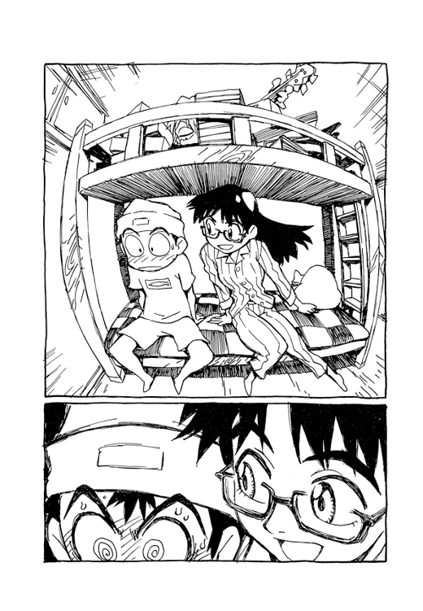
「変だよね、そのアタマ」
「！」
ナオ太は、思わず自分の帽子を手で押さえる。もちろん家にいるときもそれはずっとかぶっていたのだが......。
──やはり見られてた。たぶんあの事故のときだ。まずい。これはめちゃくちゃまずい。
「見たの？」
「あれ、なに？」
「なにに、見えた？」
「ネコミミ。猫役にはぴったりじゃん」
「だから、やらないって、劇は。だいたい、なんで俺が猫役なんかになったんだ......」
後半は愚痴だったが、少女はそれにこたえてずるく微笑んでみせた。
「集計結果すりかえたの気づかなかったでしょ」
「......え？」
「誰も、委員長のあたしがそんなことしたなんて思ってないみたいね」
「じゃあ、あのキャスティングの投票って......」
「あたしが主役で、ナオ太君がネコ役」
「............」
ナオ太もおかしいとは思っていたのだ。不自然な気がしていたのだ。クラスでは一目おかれ、一応クールで通っているナオ太がなぜ猫役なんかに選ばれたのかと。自分はそんなにコミカルなキャラではなかったはずだ。けれどイカサマであったなら腑に落ちる。
それにしてもニナモリの劇へのその執着ぶりが、ナオ太にはどうにも理解できなかった。
「怒んないよね」
「なんで俺が猫役なんだ？ なんでそんなに主役なんかやりたいんだ？」
「カラバ侯爵って、お姫様のことをだまして幸せになるんだよ。一生、正体を隠したまま、噓をつきとおして幸せになるの。騙してるうちに本物になっちゃうの......それでいいんだよね」
ニナモリの説明どおり『長靴をはいた猫』とは、貧乏な若者が猫の知恵を借りて出世するサクセスストーリーである。といっても身分を偽って王様とお姫様に近づく主人公は、悪く言えば詐欺師だ。
「いいのかニャ......」
いきなり女の声がする。
見れば、いつからいたのかハル子が二段ベッドの上段に寝ていた。
「いたのかよ」
「いたんだニャ」
「聞いてたんですか？」
「べつに。ずるして芝居の主役とったとか、そういうの興味ニャイから」
「......誰も迷惑してませんから」
ニナモリの強い口調は、逆に内心ではかなりうしろめたく思っていることを物語っていた。
いや俺が迷惑してるんだけど、とナオ太がまたぶつぶつとぼやく。
「でも秘密をネタに芝居をやらせようニャンて、あんたもやるニャ」
「お手伝いさんって、なに？」とついにニナモリが訊く。
それはナオ太もずっと聞きたいことではあった。
ホント、こいつはなにものだろう。
「お手伝いさんはそこで寝るんですか」
「そうニャン」
「......まさか、いつもそこで寝てるの？」
「そう、ここで。タッくんと毎晩ふたりっきり。うっふん」
ハル子はナオ太の帽子をひょいと取り上げ、そのネコミミをなではじめる。
「やめてよ、さわんないでよ、耳は......」
文句を言いながらも、そんなナオ太はどこか嬉しそうだ。
あの秘書とはぜんぜんタイプは違うが──二人の戯れ合いを見ながらニナモリは思った──やはりこの女も敵だ、と。
──また暗闇だ......。
光のない、誰もいない、時の止まった、暗い場所。
けれどこの暗い場所は、前にもきっと来たことがある。
そうだ、ここは僕がよく知ってる、あのふりむいてはいけない闇の中にちがいない。
ふりむいてはいけない、ふりむくことのできない闇の中。
もしふりむけば、もう二度とあの子が帰ってくることはない......。
あの子？ あの子って誰だ？
耳をすませば、なにか聞こえる。せせらぎの音だ。
どうやら目の前を川が流れているらしい。
闇の中、かすかにその川面が光っている。
そしてその川を流れていくものがある。
猫だ。ダンボールに入った子猫が流されていく。
あわてて駆け出す。いけない、早く助けなきゃ。
けれど追いつくことはできず、子猫の入った箱はみるみる闇の彼方へと消えていく。
徒労でしかないと思い知りながら、それでも懸命に走りつづける。
だって自分が助けなければ、あの子猫はずっと深い闇の奥へと運ばれていく。
深い深い闇の淵へとのみこまれてしまう。
追いつかなきゃ、僕が追いつかなきゃ、絶対に助けなきゃ......。
それでも無情に力尽き、やがて闇の中にくずれる。
だめだった。また追いつけなかった。
すでに子猫の姿はない。川も消えている。再び完全な闇の中。
ついにここまで来てしまったのですね、王様。
いつのまにか目の前に長靴をはいたミユミユが立っていた。
僕は王様じゃないよ、と答えると、ナンダバ家の飼い猫は首をふる。
いいえあなたは王様です、その証拠にあなたの耳はロバの耳ではありませんか。
ちがう、僕はロバの耳なんかじゃない。
ではその頭に戴いた王冠をとってごらんなさい。
僕の頭の......この王冠を？
けれどこれはとれない。とってはいけない、とあせる。
なぜとれないのですか、ロバのミミじゃないならなぜとれないのですか？
王様、あなたは噓つきだ、罰として人食い鬼のエサとなりなさい。
人食い鬼だって？
気配を感じた。
まちがいない、背後から人食い鬼が迫っているのだ。
ふりむけば人食い鬼は女だった。ベスパに乗り、ギターの金棒を持っている。
残虐に微笑むと、そのまっかな口を大きくあける。
やめてよ、やめて！
必死に叫ぶが、人食い鬼の口がどんどん迫り──。
チュウ、とハル子はナオ太の寝顔にキスをする。
とたんに周囲のクラスメートたちはざわめく。
ナオ太は寝ぼけ半分で机から顔をあげ、ようやく目の前にいるのがハル子とカンチであることに気付いた。
──なんだ？
そこは学校だった。土曜の放課後の教室である。
そう、ナオ太は劇の練習をさぼるつもりで逃げ帰る隙をうかがい、つい居眠りしてしまったのだ。しかし、なぜここにハル子とカンチが？
芝居の小道具やウクレレなどを持ったクラスメートたちが、みな遠巻きにナオ太を見ている。その中にはゆうべナンダバ家に泊まったニナモリの顔もあり、不機嫌な表情でナオ太と、そしてハル子を睨んでいた。
「い、いまチュウしたよね、チュウ」
「ロボットだ」
「誰が入ってるの？」
「あのチュウした大女は？」
聞こえてくる級友たちの声から、ナオ太はおよその状況を把握する。そしていましがた誰かにキスされたのが夢ではないことを知り、思わず頰に手をやる。
──なんてことだ。
どうやらハル子がカンチを伴って現れ、あろうことかクラスメートが見守る中、寝ているナオ太にキスしたらしい。
なんてことだ。
「なにしてんだよ！」
「はい、お弁当」
ハル子はカンチが携えてきた弁当箱をナオ太に差し出す。
「土曜の放課後も練習でしょ。あたしっていいお手伝いさんだニャア」
「いいんだよ、俺は劇なんて出ないんだから」
「まあまあ、どうせお昼は食べるんだから」
「いらないよ、さぼるんだから」
「ダメよ、今日こそ出てもらうわよ」
ニナモリがきびしい表情でそんな二人の間に割って入る。
「みんなできちんと決めたことなんだから！」
それは大きな声だったが、クラスメートたちはニナモリが感情的になっていることをそれほど不自然には思わなかった。誰も口にこそしなかったが彼女の父親のスキャンダルについてはもう周知のことであり、それにまた日頃からニナモリがナオ太を意識していることもそれとなく知っていたから。
「絶対帰さないから」
ニナモリは練習をさぼると公言したナオ太の腕をつかむ。その行動は、いちおう責任感のある委員長としてすじが通っていた。
しかし、もちろん他の生徒たちにとっては、むしろいま問題にすべきはナオ太がさぼるかどうかより、その頰に平気でキスした女性の正体と、さらには彼女が連れているロボットについてだった。
「そもそもこのロボットってなに？」
「あの人って光速ベスパじゃないの？」
「まさか......」
教室にいきなり現れたハル子とカンチは、あまりにもインパクトのあるコンビだ。
けれど昨夜ナンダバ家に泊まり、家政婦とＴＶウォークマンにいちおう免疫ができているニナモリにとっては、ハル子とカンチもすでに見慣れたキャラでしかなく、今はただナオ太についてだけ感情的になっているようだった。
「決めたことは守りなさいよ」
とニナモリは強い口調でナオ太に言う。
「なにむきになってんだ？ いそがしいんだよ、俺は」
「みんなが来るんだよ」
「こんな劇だれも見ないって」
「見るもん」
「見ないって」
「見てほしいんだもん！」
「目立ちたがり！」
「お父さんお母さんが一緒に見にくるんだもん！」
「............」
〝すっごい恥ずかしかったけど、ちょっと嬉しかったス......お父さんお母さんが一緒に見にきてくれたっス......〟
ああそうか、やはりニナモリも両親が来るのを楽しみにしてるんだ、とナオ太は思った。思ったが──言葉の勢いで、つい感情的になってしまう。
「学芸会なんてガキッぽいんだよ！」
「自分だって子供のくせに、甘いカレーしか食べられないくせに」
「猫なんて恥ずかしくてやってられっか！」
「こんな頭して何言ってんのよ！」
ニナモリはカッとなり、ついナオ太の帽子をはぎとってしまう。
その結果、ナオ太の頭はみんなの目にさらされることになった。
当然、そのネコミミを見てクラスメートたちはざわつく。
──見られた！
せっかく隠してたのに、とうとうみんなに知られてしまった。僕の頭からネコミミが生えてることを......。
もっとも手でふれたのならともかく、ひとめ見ただけでそれを頭から生えてる本物のネコミミと思う者などはいなかった。みんなはただ、どうしてそんな趣味の悪いものをクールなナオ太君が頭につけてるんだろうと首をひねっただけである。だからごまかそうと思えば、まだいくらでも手段はあったのだ。あったのだが──
あせったナオ太も思わず負けじと口走ってしまう。
「偉そうに言うな。おまえだって、ずるして主役になったくせに！」
「！」
ニナモリの表情が凍りつき、その顔色が蒼白になる。
その瞬間、ハル子よりカンチよりナオ太のネコミミより、クラスメートたちの視線がすべて自分だけに集中した──ようにニナモリには思えた。
やだ、と声をあげ、委員長は頭を抱えてその場にしゃがみこむ。
同時にハル子の左手ブレスレットについた金属片が強力な磁石のように反応して動き、そんなニナモリを指す。ハル子の緑色の目がいつになくマジになり、そして残酷な光が宿る。
ニナモリの体は痙攣したように小刻みに震えていて、傍目にもただならぬ体調の異変が見てとれた。その全身からみるみる汗がふきだしていく。
女の子が何人かかけより、その顔をのぞきこんで声をかける。
「エリちゃん、大丈夫？」
「保健室いこ」
「痛い！」
悲鳴をあげるニナモリ。
そしてクラスメートたちは今度こそ本当に驚いて一様にその少女の変化を見た。
なんと、ニナモリの頭からネコミミのようなものがいきなりとびだしたのだ。
かけよった女の子のひとりが思わずつぶやく。
「──手品？」
だがそれを見ていちばん驚いたのはもちろんナオ太である。なにしろニナモリの頭にとびだしてきたそのネコミミは、自分の頭に生えてたのとそっくり同じに見えたからだ。
思わず手をやってみると、ナオ太の頭のネコミミは消えていた。
同時刻、ニナモリの父親が誘致のとき不正を働いたというＭＭ工場で、再び〝臨戦態勢〟が始まっていた。
土曜のこの日、週休二日制のため内部に就労する者の姿はなく、警報は無人の工場内に鳴りひびく。そして一室にあるホストコンピュータには戦闘報告が届き始めた。
《顕現過程に脚部先端で凍結していたＭＭＲクラス［Ｌ］・ＰＳが、近距離に発生した別出口を発見。急遽、通路の変更を試みる。13：13。
しかも顕現予想空間の近くにＭＭＲクラス［Ｋ］・００１アトムスクの存在を認める。13：13。
［Ｋ］の捕獲もしくは破壊を実行する。13：13。
ＰＳの作戦遂行を祈る。13：13》
ニナモリは身に襲いかかった異変への耐え難さについに悲鳴をあげた。
クラスメートたちはわけがわからず呆然とするばかりだが、ナオ太だけはニナモリの身になにが起こっているかを理解していた。その苦痛を知っていた。
頭から異物がとびだす現象。
おそらく彼女はいま、きいんという激しい耳鳴りの中、頭部が脈動する気持ち悪さに耐えているにちがいない。
ナオ太自身、それはつい最近、二度も体験していることである。
その一度目は今もすぐ傍らにいるロボット・カンチが出現したとき、そして二度目はそのカンチに破壊されたあの片腕ロボット出現のときだ。
待てよ、とナオ太は思う。ということは、たった今もニナモリの頭からまた得体の知れないロボットが出てくるということか？ それもこの白昼、教室の中で──。
ニナモリの頭のネコミミが、それぞれいっきに天井近くまで伸びた。それは長い金属のアームだ。ミミと思っていた部分は、その金属アームの先端に付属したゴムパッドのような部品であった。アームは二本だけでなく、同じようなものがあとひとつ後頭部に出現し、つまり合計三本が少女の頭からつきでて、それぞれが関節で折れ曲がってその先端のパッドを教室の床につけた。
その姿はカメラなどを固定する三脚に似ていた。いや、大きな三脚架そのものと言ってもよかった。そして三本の脚を束ねるその中心部分にニナモリの頭は密接し、その体はすでに宙吊り状態になっている。ブルマからのびた長い素足が床から離れ、懸命にもがいて激しく宙を蹴りつづけている。
もはやその現象を手品と思う者はなかった。
さらにその三脚の中心部分、つまりニナモリの頭部から縦長に湾曲した卵型の金属球体が飛び出した。級友たちからまた驚きの声があがる。当然だ。その金属球体だけでも少女の頭の数十倍の体積はあるからだ。小さな〝通路〟から巨大な金属塊が出現する様子を、ナオ太も初めて客観的に目撃した。それは異様な光景だった。どうやら〝やつら〟は、空間そのものを歪曲させて通り抜けてくるらしい。その出現時にはニナモリの頭部周辺の空間が歪んで見えた。
ついに全身を現したそのロボット──たぶんロボットだろう──は人型ではなく、全体は三本足のタコとでもいったシルエットである。
その三本足をひろげているのは、教室の天井が低いため、どうやらそいつなりに身を屈めているらしい。
〝レモン絞り〟だ、とナオ太は思った。
かつて兄と一緒に一度だけマミ美の家を訪れたとき、そのキッチンにこういう形のレモン絞り器が置いてあったのをふと思い出したのだ。
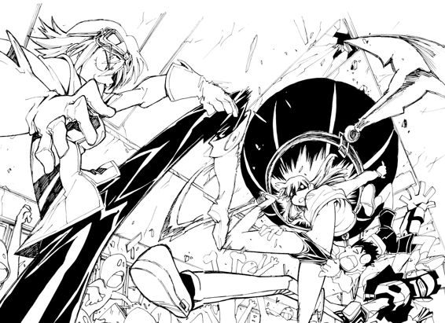
ニナモリの頭部、それも鼻から上は、すっぽりと金属球体にめりこんでいる。抵抗する力をうしなったのか汗にぐっしょり濡れた少女の手足はだらりとぶらさがり、今はただ呼吸のため唇ばかりがかすかに動いていた。
──なんとかしなきゃ......なんとかニナモリの体をこの〝レモン絞り〟からひき離さなきゃ......。
あの片腕ロボットの出現時にはナオ太の頭もくっついたまま離れず、しばらく生死の境をさまようことになったが、今のニナモリはさらにひどい状況と言えた。
〝レモン絞り〟はニナモリの体をまるで自分のボディの一部にしているようだ。
《ＰＳは顕現時に使用した通路デバイスを一部ボディに巻き込んだ様子。13：14。
作戦行動に問題なし。13：14。
否、通路デバイス側の意識が制御システムに影響する可能性が......》
クラスメートたちが言葉もなく委員長の変わりはてた姿を見ていると──。
〝レモン絞り〟が急に動き出し、ナオ太に向かって迫ってきた。
「わわ......」
そのすばやい動きにたちまち教室の壁に押しつけられるナオ太。
〝レモン絞り〟はなぜかナオ太の口に自分の金属ボディの一部を押しつけてくる。
なんだかそれはキスを迫っているようにも見えた。
「なにをしてるんです、やめなさいニナモリさん！」
担任ミヤジのヒステリックな声がして、〝レモン絞り〟は一瞬その動きがとまる。
劇の練習を見にきたミヤジはこの混乱を目にし、なぜかそれをニナモリによるものだと判断したようである。（この女性教師、あんがい大物かもしれぬ）
「こうなるとわかってれば......」
ハル子はあのギター型兵器をもってこなかったことをくやみ、小さく舌打ちする。
だがふと見れば、近くにいる男子生徒が芝居で使うウクレレを手にしていた。
「よこしな」
ハル子はそのウクレレを強引にひったくると、大きく振り上げて構える。
なんと彼女が手にするとあらゆるものが超兵器に変化する──わけもなく、結局その楽器はロボットの金属ボディに叩きつけられた瞬間、粉々に砕け散った。
「ウクレレじゃダメブー」
不可解な捨てゼリフを吐くと、ハル子は次に思い切りよく口笛を吹いた。
その瞬間、製パン・シゲクニの前に停車していたベスパのエンジンがいきなり始動し、ライトが点灯して走り出す。もちろん無人でだ。
おそらくハル子が口笛で呼んだのだろう。
無人ベスパは、まっすぐに疎瀬小学校に向かって走った。
パニックに陥る教室。
〝レモン絞り〟は、いまやニナモリの体を機能的にも完全に自分の一部として利用し、暴れていた。
すらりとのびた少女の白い両足は、まるで昆虫のアゴのように操られてナオ太の体をくわえこむ。
「離せよ......」
ナオ太は自分の体をがっちりと捕らえるニナモリの両足をなんとか広げようとする。
見ているハル子はお気楽につぶやく。
「なんだかエッチだねえ」
ナオ太の体をくわえたまま、次に〝レモン絞り〟はそのセンサーアイをカンチにむけた。制御機能に不純物が融合して無意味に少年をくわえこんでしまったが、どうやら本来の獲物も思い出したらしい。
「ずらかるわよ、カンチ」
わざとらしく大声で言うと、ハル子はカンチをともなって廊下に飛び出す。
〝レモン絞り〟はナオ太をくわえたまま、そのあとを三本足で器用に追いかけた。
「離してくれえ！」
ナオ太の声が虚しく廊下に響いた。
昇降口の鉄扉を蹴破って屋上に出ると、〝レモン絞り〟は逃げた獲物の姿を求めて周囲をサーチする。
「ここだ！」
設置された給水塔の上に、見下ろすようにハル子が立っていた。
そして彼女の背後にはすでに忠犬のようにベスパがひかえている。
ハル子は残忍に微笑むと、ベスパのシートを開けてその収納スペースから武器を取り出す。それはもちろんあのギター型光域空間干渉兵器だ。
「覚悟しな。いま成敗してやる」
「やめてよ！」
〝レモン絞り〟に捕らえられたままのナオ太があわてて叫ぶ。
ハル子ならナオ太やニナモリのことなど一切気にかけず、無慈悲にこの〝レモン絞り〟を攻撃するにちがいないと思ったのだ。
その通りだった。
ハル子は残酷な笑みのまま、手にした武器の手動ジェネレーターを起動させる。
輝き始める相手の武器に脅威を感じとり、〝レモン絞り〟は数歩を後退ると、くわえていたナオ太をハル子に向かって吐きつける。少女の長い両足が器用にナオ太の体をはじきとばした。
絶叫しながら、ナオ太は今日も宙を飛ぶ。
「わあああ......」
「ジャマジャマ！」
その飛んでくるナオ太の体を、ハル子は容赦なくギターでなぎはらう。軽くスイングしただけで、ナオ太の体はフライのように空高くはねとばされてしまった。恐るべき兵器ギターだ。
「うりゃあ」
その超兵器を手に給水塔から飛ぶと、ハル子は〝レモン絞り〟の金属球体部分を渾身の一撃で殴りつけた。
一瞬、稲妻のような閃光が真昼の屋上を眩く染める。
すると──ギギギギと不気味な不良作動音を発して〝レモン絞り〟は不規則な動きをはじめた。屋上を無意味に動きまわる。なんだか苦しんでるようだ。
「きゃあ──」
その〝レモン絞り〟の苦痛を共有するかのように、融合状態のニナモリもまた悲痛な金切り声をあげた。電撃を受けたようにその両足をばたつかせ、身悶えして体をねじる。それは自分の骨を砕かんばかりの激しい動きだが、その足搔きが幸いしたのか、やがて少女の体は〝レモン絞り〟のボディから分離し、屋上の床に落ちてぐたりと倒れた。
ハル子は不敵に微笑む。
一方、空高く弾き飛ばされたナオ太は、やはり自分こそ世界でいちばんの不幸者だと思っていた。どこまでもひろがるナオ太の不幸のバリエーション。その体は小さくアーチを描きながら重力に引かれていく。
そのコースを予想していたかのように屋上の落下予想地点にはカンチの姿があった。
カンチは自分のボディの一部を開け、飛んできたナオ太の体をすっぽりと収容した。ナイスキャッチ、である。
とたんにカンチの青黒いボディは真紅に変貌し、その人型の外観は再びあの巨大な砲身へと変形する。まがまがしい兵器そのものの姿、カンチ自走砲モードだ。
勝負は一撃で決まった。
カンチは砲口近くから即座に赤い照準レーザーを照射し、〝レモン絞り〟の位置を探知すると響く炸裂音とともに砲撃する。
撃ち出された弾体は〝レモン絞り〟の金属ボディの中枢をあっけなく貫通して破壊し、さらには校舎の向こうにある体育館の屋根にも大穴をあけた......。
「......あ、なつかしいなこれ。ほら、小学校のとき演劇やったの。そのときお父さんが撮った写真。あたしこのとき主役だったんだ。でね、こっちの猫の男の子が、そのころの初恋の相手。ちょっと可愛いでしょ。こういうこと軽く口にできるんだから歳とるのも悪くないわよね。あ、ううん、それはスポットライトじゃないの、そのときたまたま体育館の屋根に穴があいてて、陽が差しこんでるの......背が高く見えるでしょ、あの頃はクラスでいちばん大きかったかな。え、メガネ？ それはね......」
数日後、疎瀬小学校の体育館で六年一組による『長靴をはいた猫』が上演されようとしていた。
開演を伝えるアナウンス。そして拍手の音。
ステージ舞台の袖には、すでに芝居の衣装に身をやつしたニナモリが出番待ちをしていた。
結局、ニナモリを主役にすえたまま、芝居は上演されることになった。キャスティングの不正に関してはクラスの誰も追及しなかったからだ。
そういえばニナモリの父親も証拠不十分で起訴されず、ふてぶてしく市長職をつづけている。けれど父親のそうした厚顔な態度をニナモリは嫌いではなかった。
その娘なんだから、自分だって父親以上に図々しく生きてやる。
ずるして主役になったのがなんだ！
ロボット怪獣になって暴れたくらいがどうした！
いろいろな噂が嫌なら転校すればいいと父親に言われたが、ニナモリはこの街に留まることにした。
それがニナモリ・エリ十二歳の選択だった。
「しっかりね、ニナモリさん」
ミヤジが励ましの声をかける。うなずくニナモリ。その顔を見て猫役のナオ太が驚く。
「あれ、メガネ？」
そう、ニナモリは眼鏡をかけていた。
もちろんニナモリが演じるカラバ侯爵はメガネをかける役ではない。ではあれほど隠していたメガネを、なぜわざわざ芝居のときにかけるのか？
ニナモリは自分のメガネのリムに指を通し、レンズがないことをナオ太に示した。
それは伊達メガネなのだ。
──どういうこと？
さらに理解できずにナオ太は首を傾げる。
ベルが鳴り幕があがる。
少女はこれから先の自分の役をきちんと演じる覚悟で、用意された舞台へとその一歩を踏み出した。
涼しい秋風の吹くその午後、疎瀬川の河畔にある市営野球グラウンドの一塁側ベンチにナンダバ・ナオ太は腰かけ、自分の打順を待っていた。
ナオ太が着ているユニフォームは町内の草野球チーム疎瀬マーシャンズのものである。そして本日の対戦相手は、因縁のライバルだという隣街の馬熊フラグメンツだった。
すでに試合は終盤をむかえ、現在は先攻マーシャンズの攻撃である。ボードには敵フラグメンツの大量得点が表示され、対するナオ太のいるマーシャンズはいまだ無得点。
情けない、とマーシャンズのベンチでぼやくユニフォーム姿の老人はシゲクニである。
そう、ナオ太の祖父シゲクニこそ、この疎瀬マーシャンズの監督なのだった。
マーシャンズはこの地域草野球リーグが始まったときからある伝統的なチームで、今でこそ万年最下位だが、かつては首位の座を独占していたという。年配選手たちの一番の自慢は昭和62年、史上最強だったＰＬ学園を練習試合で負かしたことである。（ま、言うだけならタダだ。真偽のほどは定かではない）その当時はエースで四番打者のシゲクニが率いるワンマンチームだったらしい。
ナオ太が今日、このオヤジ連中の草野球リーグに助っ人で駆り出されたのは、もちろんそのシゲクニの強引な徴募によってであった。
「ホントに情けない。オリンポス火山大噴火打線といわれたわがマーシャンズが、ただの一点も取れんとはな......」
今シーズンもマーシャンズはリーグ最下位だった。すでに秋も深く、どうやらまた最下位連続記録を更新しそうだ。唯一の希望が、今日から始まったこのフラグメンツとの三連戦をなんとか勝ち越すことだった。つまり宿敵フラグメンツはマーシャンズについで負けが込んでいるのだ。
「そんなこといわれてもなあ」選手の一人がシゲクニのぼやきに答えて無遠慮に言う。「頼みの助っ人が期待はずれっすからねえ」
ベンチの片隅にすわっていたナオ太は、それを耳にして居心地悪そうな表情になる。
実際、ナオ太のこれまでの打席はすべて三振だった。それも〝見逃し〟である。
「あの助っ人くん、結局一回もバット振ってないでしょ」
「大噴火どころか死火山すよ」
などとさらにダメ押しでぼやく選手たち。そして自分たちが万年最下位なのを棚にあげ、ナオ太の打席から攻撃のリズムを狂わされたとかなんとか勝手な文句を口にしはじめた。
シゲクニがあきらかな失望の目でナオ太を見る。
こんなはずではなかったと〝おさがりのユニフォーム姿〟でナオ太は思う。
いや、自分のバッティングの実力に関してはよく心得ていたので、連続三振などはべつに意外ではなかった。予想外だったのはチームのナオ太に対する期待の大きさである。
シゲクニの無理強いではあったのだが、それでもナオ太がしぶしぶ試合に出るのをＯＫしたのは、草野球とはいえ大人ばかりのチームにあって、小学生の自分などはしょせん間に合わせでしかなかろうとたかをくくっていたのだ。おそらくはライトで九番。助っ人とは、要するに足りない人数を補うための頭数あわせだとばかり思っていたのだ。
ナオ太はアメリカに野球留学した憧れの兄・タスクが、幼い頃すでに町内の草野球チームに残した足跡までは把握していなかったのだ。
兄タスクは、かつてこの草野球チームで何度も奇跡的な勝利をもたらした伝説的な助っ人少年だったという。それも、現在のナオ太よりさらに歳若い幼少の頃からだ。
タスクが中学に入ってからは本業の部活が忙しく、さすがに草野球チームは遠慮して助っ人を頼めずにいた。だが、なんとかタスクに復帰してもらうことは弱小化したチームにとってずっと悲願であったようだ。
そんな願いも虚しくタスクは渡米してしまったわけだが、やがてチーム内ではその弟であるナオ太の存在が噂になり始めたらしい。なにより、ナオ太がいつもバットを持ち歩いていることが、たまたま目撃した選手たちの期待をかきたてたのだ。
あの天才野球少年ナンダバ・タスクの弟がバットを持ち歩いている！
ついにわれらの悲願がかなうときがきた......。
そしてナオ太を待っていたのはいきなりの四番と、あまりに大きすぎる期待だったというわけだ。
だが現実のナオ太の野球の実力は、同世代の少年たちの中にあってもけして高い方ではない。いや、〝高い方ではない〟というのもかなり控えめな言い方である。ナオ太自身、そのことはもちろんよく知っている。だから与えられたユニフォームとその背番号が兄のものだと教えられたときからとても憂鬱な気分になったのだ。
日頃から周囲の者たちの自分に対する評価の低さに苛立つナオ太にとって、不得意なジャンルで期待されて結果的に失望されるのは二重に苦痛であった。
三番打者がフライに打ちとられ、いよいよナオ太の番となる。
バッターボックスに立つナオ太は、持参した専用バットを手にしている。
この兄のバットをいつも手にしているから、タスクのように野球ができると期待されてしまったわけだ。
しかし、それは素振りをすることはあっても、試合ではけして振ることのないバットなのである。ただ持っているだけのバット。そしてナオ太のスイングは、兄に教わったものではなく、まったくの我流であった。
──悪かったな、死火山で......。
一応、味方のベンチから声援が聞こえる。
「かっとばせ、タスクちゃんの弟！」
「一度くらい塁に出てよ、タスクちゃんの弟！」
誰もナオ太の名は呼ばない。ここではナオ太の名は〝タスクの弟〟なのである。
居心地悪そうに構えるナオ太に対し、凄まじい豪速球がどまんなかを貫く。
これまでの打席と同様、ナオ太は棒立ちになったまま、ただ見送ることしかできない。
ストライク、と審判が声を張り上げる。
相手側のベンチは拍手喝采でもりあがる。
ナオ太は不敵に微笑む相手投手の顔を見つめて溜め息をついた。
敵チーム・フラグメンツのピッチャーは──なぜかハルハラ・ハル子なのである。
どういうわけかナンダバ家の家政婦であるハル子はこの日、フラグメンツのユニフォームに身を包んで現れ、ナオ太の敵としてマウンドに立っているのだ。
調子にのったハル子がベンチの応援に投げキッスで応えてやると、敵チームのオヤジ選手たちはだらしなく相好をくずして狂喜する。もうデレデレである。まるでアイドルとそのファンクラブ状態であった。
長身のハル子はスタイルも良く、そのユニフォーム姿はたしかにハツラツとして魅力的だった。プレイの方も投げて打っての大活躍で、オヤジたちが喜ぶのもまあ無理はない。
すでに味方マーシャンズ側ベンチのオヤジたちまで、ハル子の一挙手一投足にことごとく目を奪われているありさまである。
そんな様子を見ていると、しかしナオ太は少しばかり誇らしげな気分になってしまうのだった。
みんなの憧れるそのハル子は、ナオ太と同じ家に暮らし、同じ部屋に寝て、すでに人工呼吸まですませた仲なのだ。この自分と特別な関係なのだ。
それを思うと、不覚にもつい優越感がこみあげてくるのだった。
「ストライク・ツウ！」と審判の声。
やはり二球目にもナオ太はまったく手を出さなかった。
打ち気がないのは誰が見てもわかる。味方ベンチから何してるんだと野次がとぶ。
だがナオ太にしてみれば当然のことで、ハルハラ・ハル子はあの未知のロボットたちと互角以上に戦う怪物なのである。その怪物の放つボールなど、もう最初から打てるなどとは考えていなかった。
実際、その投球は目で追うのがやっとで、とても手が出せたものではない。
無理なものは無理。
それだけの話である。
ハル子はコントロールも良かった。これまでナオ太はすべて三球三振である。つまりナオ太は今日、すべて見送りの三球三振なのだ。
どうせダメだとわかることこそ自分の才能だ、などとナオ太は心の中でつぶやく。みんなはこの女がどれほど凄いのか知らないんだ。知っているのは僕だけなんだ......。
セットポジションから三球目を投げるハル子のフォームと対峙しつつ──ナオ太の視界はいきなり暗転した。
体がふっと軽くなり、やがて遅れて鈍く、重い痛みが頭部を襲う。
──まさか、また〝あれ〟が始まったのか......。
〝あれ〟──自分の頭からロボットが出てくるあの超常現象──が、またもや始まったのだとナオ太はおびえる。（それに関しては最近はやや強迫観念の傾向すらあり、やむをえないことかもしれない）
しかし次の瞬間、デッドボール、という審判の声が聞こえ、ようやく状況を理解する。
なんのことはない、投球が頭にぶつかったのだ。
そしてナオ太はバッターボックスの上に倒れたのである。
それだけのことだった。
代走の選手が一塁に出て、ナオ太はベンチへ。念のため頭に包帯を巻かれている。
──さては危険球なげやがったな......。
ふてくされた顔でマウンドのハル子を見ていると、いきなりカメラのシャッター音がする。
いつのまにかナオ太の背後にはカンチが立っていた。どうやら包帯の巻かれたナオ太の頭を写真に撮ったらしい。このロボットは、ときどきそうした無意味な行為におよぶ性癖があるようだ。
撮った写真はすぐに現像され、カンチのボディの一部からプリントアウトされてくる。
それはレントゲン写真だった。暗いフィルムのまんなかに写った白いかたまりは、ナオ太の頭蓋骨だ。カンチはなにか嬉しそうにうなずきながら、その透視図を見ている。
そんなロボットを見て選手の一人が言う。
「あぶないなあ、勝手にレントゲン写真なんて撮ってんじゃないよ」
「これ、ＭＭで作った機械だろ」と他の選手も、カンチの胸のロゴを見て言う。「放射線とか大丈夫なの、こいつ？」
「ＭＭってアメリカじゃ軍事兵器とかの研究もやってんだろ？」
「だいたいうちのチームの負けがこんできたのも、あの工場ができてからだよな」
カンチの評判はマーシャンズではあまりよくないようだ。普段からやたらと街の中をうろつき、手当たりしだいに物色する正体不明のロボットのことは、やはりみんな不審な目で見ていたらしい。ついでに言えばこのマーシャンズは古い商店街中心のチームなので、ＭＭに対してもどこか批判的なのである。
「わしは知らん」としかしシゲクニは言う。
シゲクニにしてみれば、せっかく使い走りとかをしてくれる便利な拾いものの機械なのに因縁をつけられ取り上げられてたまるか、という気持ちであるらしい。
選手たちも監督の所有とあってはそれ以上文句も言えず、ロボットの悪口はそれきりになった。
ナオ太の次の打者も三振になり、マーシャンズの攻撃は今回も０点で終わった。
チェンジ。
だが頭に包帯を巻かれたナオ太は守備に出ず、そのままベンチに残った。もはや御役ごめんで立ち去ってもいいのだが、敵フラグメンツの攻撃ぶりを見ることにする。次の回の最初のバッターはハル子だったので、それだけは今いちど見ておきたかったのだ。ナオ太にとりハル子のスイングはどこか憧れの兄を彷彿とさせるものだったから。
もっとも、ハル子のスイングと兄タスクのそれは型が似ているわけではない。似ているのはタイプではなくレベルだった。二人のスイングはあまりにも完成され、ともにある種の到達点を極めているように思えるのだ。
「うりゃあああ！」
気合い一声、ハル子は遠慮なく金属バットを叩きつける。
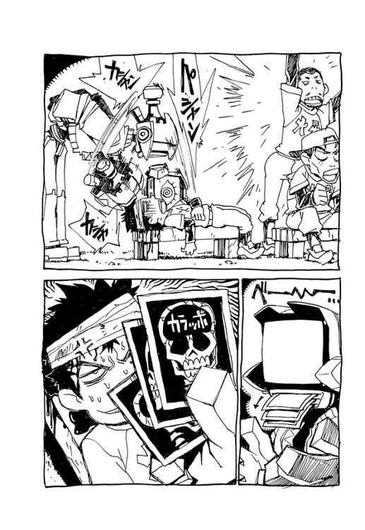
硬球は芯にとらえられ、青空へ。
場外ホームランであることは、誰の目にもあきらかだった。
さらなる追加点に、がっくり肩を落とすマーシャンズの選手たち。
白いボールはすぐに蒼穹の彼方に消え、見えなくなる。選手たちはその行方を目で追うこともあきらめる。
ただ──。
そのホームランボールの軌跡を、いつまでもいつまでも見上げている者がいた。
それはロボットのカンチである。
試合終了。
大量得点差がスコアボードに表示されている。もちろん馬熊フラグメンツの圧勝であり、対する疎瀬マーシャンズは結局無得点だった。文句のつけようがない完封試合である。
「うちにもあの女みたいな助っ人がほしいよ」
「全打席場外ホームランだもんな」
試合のあとは勝ち負けに関係なく反省会をやるのがマーシャンズの慣例になっていたが、当然ながら選手たちの口からもれるのはハル子についての詮索ばかりだった。
「敬遠の球まで打たれちゃなあ」
「あの女、なにもんなんすかね、監督」
「............」
普段なら負け試合のあとは厳しく選手たちを叱るシゲクニだが、今日ばかりは苦虫を嚙み潰したような表情で黙りこんでいる。もちろん、あのハル子が自分の家の家政婦であることは選手たちには内緒にしていた。
シゲクニもまた、今日初めてハル子がフラグメンツのユニフォームを着てるのを見て驚いたのである。どうして彼女が敵チームに、といちばん疑問に思っているのは、他ならぬシゲクニであった。ハル子さんがあれほど野球がうまいとは身近にいながらなんてうかつな、などとずっと歯ぎしりしていたのだ。
なんとかしなければ、とシゲクニは思案する。対フラグメンツ戦はまだあと二試合残っている。なんとか手をうたなければ、このままではマーシャンズの三連敗だ。しかしどのような策があるだろう......。
おい凄いぞ、とそのとき選手の一人が声をあげた。
なにごとかと見れば、ベンチの傍らに置いてある球入れ籠に、飛んできたボールが次々と入っていくのだった。絶妙のコースで飛んできたボールがそれほど大きくもない籠の中に次々におさまっていく光景は、まるでトリック映像を見ているようだ。
それはグラウンド整備をやらされていたカンチが、落ちているボールを軽く遠投しているのだった。いや〝軽く〟に見えるが、そのコントロールは神業的に精密である。球威も申し分ない。
驚く選手たちとシゲクニは、思わず互いに顔を見合わせる。もちろん、みな同じことを考えていた。
あわててグラウンド整備をやめさせ、ロボットにグラブを与えてノックしてみる。
もしやこれは掘り出しものなのでは？
掘り出しものどころではなかった。
ロボットはどのようなライナーやイレギュラーも華麗なフォームで完璧にキャッチし、返球してみせた。その軽快な動きは期待以上である。そして、さあこいとさらにグラブを拳で叩いてみせる。やる気も十分だ。
「こいつ、すごいっすよ監督」
「これなら次の試合は勝てますよ」
「隠し玉じゃ、うちの秘密兵器じゃ、こいつは、このために居候させとったのじゃあ！」
興奮したシゲクニのそのいいかげんな言葉に本気で納得する選手たち。
調子にのったシゲクニはさらに勢いづいて言う。
「そしてもうすぐ、タスクも帰ってくるのじゃ」
おお、とチーム全員の歓声があがる。
タスク帰国の朗報は、ロボットの能力を知った以上に選手たちを喜ばせた。それほどタスクはこの草野球チームにおいて絶対的な存在なのだ。
もはや本日の助っ人のことを気にかける者はひとりもいなかった。
もりあがる一同を横目に〝タスクの弟〟はひとりすごすごと立ち去る。誰も見向きもしない。
ひとり土手をあがっていくと、河岸道路にベスパがあり、そばにハル子が佇んでいた。たったいま巻きあげたらしい紙幣を数えている。どうやら試合に出たのは、その金のためらしい。
ナオ太の顔を見ると、紙幣をポケットにねじこむ。
「似合ってるじゃんその包帯頭」
「............」
ナオ太の頭にボールをぶつけたことに関しては、いっさい責任を感じていないようだ。むしろ、あんな球もよけられないの、タッくんは野球下手ね、と言ってるように聞こえる。いや、そう言ってるのだ。
「いいんだよ」とナオ太は口をとがらせる。「野球なんかうまくなくても」
「かわいくないなあ」
「やめろよ」と頭をかばうナオ太。
ハル子がベスパに固定していたギターケースを手にしたので、てっきりいつものように殴られると思ったのだ。
バカ、こんな人前でまた戯れごとをはじめるなよ、みんなの噂になるじゃないか、でも自分を馬鹿にしている両チームの選手たちは、自分とハル子の関係を見たらどう思うだろうか......。
けれど、ハル子はそのギターをただ背負っただけだった。ナオ太はひそかにがっかりする。
ハル子はベスパにまたがると、ナオ太が手にしたバットを見て言う。
「とにかく、振らなきゃ話になんないよ」
「どうせ打てないよ、おまえの球なんか」
「タッくん、自分のこと特別だと思ってるでしょ。だから振れないんだ。振ったら特別じゃないことがばれるから」
「............」
ナニヲイッテルノダ？
ハル子はメットをかぶると佇むナオ太をその場に置き去りにし、アクセル全開で走り去った。
〝反省会の二次会〟のため、シゲクニは選手たちとどこかへ流れていった。たぶん駅前の焼き鳥屋だろう。
ナオ太が適当に道草をくってから家に帰ると、居間にはまだユニフォーム姿のままのハル子が寝転び、その彼女の背中をカモンがマッサージしていた。
「あーん痛い、もすこしやさしくう」
「ごめんね、ハル子さん」
少なからずナオ太はその光景にショックを受ける。カモンはけっこう大胆な場所にも平気な顔でマッサージをしていて、ハル子もごく自然にそれを受け入れてるようなのだ。おかしい。いつから二人はそんなに気安い関係になったんだ？
カモンが上機嫌に言う。
「おかえりなさい、ナオ太君。すぐにご飯ですよ」
「......なにやってんだ？」
乾いた声でナオ太が訊く。
しかしカモンはナオ太の質問を無視し、どこか淫らな空気を漂わせたそのマッサージ行為を続ける。ついには自分のアゴをハル子の背中に押しつけ、グリグリしはじめた。
「あ、おヒゲが」と嬉しそうに声をあげるハル子。「効くわね、電気アンマ」
ナオ太は冷たい手で心臓をつかまれたような気分になる。いきなり裏切られた思いだった。
──先に会ったのは、タッくんだよ......。
初めてナンダバ家に来たあの夜、ハル子はナオ太にそう言ったのだ。
彼女はこの家に来たのはナオ太がいるからだと、そう言ったのだ。
そしてあのとき、ほんの少し──ほんの少しではあるが──ナオ太はときめいたのだった。それなのに──。
ナオ太は不機嫌な口調で、思いつく精一杯の文句を言う。
「......汗臭い。ユニフォームくらい着替えろよな」
「タッくんはぜんぜん汗くさくないね。そっか。つったってただけだもんねぇ」
「だいたい、なんでおまえは隣街のチームにいるわけ？」
「アルバイト」とハル子は言う。「電気代の足しにしようかと思って」
「............」
（少し前からナンダバ家の電気料金の使用メーターは通常の数十倍の速度で回転していた。そしてナオ太がその事実と意味を知るのはもう少し先のことである）
エプロン姿で夕食を作っていたカンチが、台所から料理の皿を運んでくる。
このロボットは無給でひたすら奉仕する理想的な家政婦なのだが、小学校の家庭科以上のレパートリーはなく、今夜のメニューは大皿いっぱいの目玉焼きである。
「ほらハル子さん、あーん」
カモンはその目玉焼きの一枚を箸でつまむと、なれなれしくさしだす。まるで〝新婚家庭ごっこ〟だが、ハル子もそれをうけて素直にあーんと口を開く。
さすがにナオ太は怒ってしまった。
「なんだよそれ、おまえは──」
と言いかけるが、けれどそこから先の言葉が出てこなかった。
イツカラオマエタチハソンナカンケイニナッタンダ。
今のナオ太の感情は要するに嫉妬なのだが、本人はそうだと認めたくない。だから、文句を言うことができない。ただ手にしたバットを強く握りしめることしかできなかった。
苛立つナオ太は、いたたまれなくなり部屋を出ていく。
「ご飯、食べないのか？」とカモンが声をかける。「ほら、ナオ太君の好きな遺伝子組み替え納豆もあるぞ」
その脳天気な声すら、今のナオ太には敵意に満ちたものに聞こえた。
表に飛び出したナオ太は、手にしたバットで思わず家のわきにあるガードレールを殴りつけた。
ガン、と金属音がして、ガードレールにはへこみが残る。
──先に会ったのはタッくんだよって言ったくせに......。
その言葉が、しかしどうしても口から出なかった。
大きく振り上げ、さらに二度三度と叩く。
その度に白いガードレールの表面には、歪んだ傷跡が残った。
「おいおい、公共物を傷つけるなよ」
男の声に、ナオ太は驚いてふりむく。
街灯の下に、見知らぬ男が立っていた。背広姿。背が高く体格のいい、どこか水泳選手を思わせる筋肉質な男だ。
「バットなんかで殴ったらガードレールが痛いじゃないか」とその男は言った。
思えば、今回の〝バット事件〟は、その男の出現が始まりだった......。
夕暮れの疎瀬橋。
ナオ太は今日もマミ美と堤防に座りこんでいた。
「それで、ハルさんとケンカしたの？」とマミ美が訊く。
「するかよ、あんな女と」
「ほほう、大人っスね」
ナオ太は、そういえばマミ美が最近やたらとハル子に憧れていたことを思い出す。ハルさんはカッコイイっス、イケてるっス、とか普段からよく口にしている。
なのに、ハル子とカモンのあやしい関係のことが昨日から内にくすぶっていたナオ太は、つい不満の数々をマミ美にもらしてしまったのだ。まさかクラスメートに相談するわけにもいかず、他に適当な相手がいなかったのである。
こんなときこそ兄がいてくれればとも思うが、もしタスクがいればマミ美とこうして二人きりで過ごすこともないわけで、複雑な心境である。
「でも、その頭の包帯は？」
「......いいんだよ、これは関係ないの」
本当はその頭のケガもハル子によるものだったが、あえて説明する気はなかった。それは三振やデッドボールのことをマミ美に話すのが嫌だからかもしれない。
「タッくん機嫌悪いっス。なんでかな」
「............」
背中あわせに座っていたマミ美は、振り向くと間近でナオ太の目をさぐるようにのぞきこむ。見透かしたように微笑むマミ美の目。それがまたナオ太の癇にさわる。その目はなんだか、タッくんはハルさんのこと好きなんでしょ、と言ってるように思えるのだ。ホントは好きな人とケンカして機嫌悪いんでしょ？
冗談じゃない、とナオ太は思う。あんな正体不明の通り魔女なんかを誰が好きになるもんか......。
そして、やはりナオ太がハル子のことを好きだと勝手に決めつけていた昨夜のあの〝眉毛の男〟の顔を思い返していた。
きれかけたナオ太がバットでガードレールを叩いていたあのとき、いきなり声をかけてきた妙な男。
結局、あの男は何者だったのだろう......。
男はあのあと店に入ってくると、トレイを手にパンを選びはじめたのだった。
見慣れない顔だなと思ったが、その日の売れ残りを次々とトレイにのせてくれるありがたい客ではあった。
年齢は二十代後半くらい。体格のいいその男は妙に太い眉をしていた。どこか不自然な眉。よく見れば、それは〝描いた眉毛〟らしく、しかも本来の位置からずれているように見えた。
「激辛カレーパンか」
パンを物色していた男は、やがて棚の一画を見て、その不自然な眉をひそめた。
「これ、このまえまでなかったよねえ」
ちょうどそのとき、店の奥からハル子のはしゃぎ声が聞こえた。悩みも屈託もなく人生を楽しんでいる自分勝手な笑い声。
男は店の奥をちらりと横目に見て言った。
「なんか余計なやつが増えたって感じだよねえ。僕はどうも苦手だな」
「............」
その〝余計なやつ〟というのが、激辛カレーパンのことであるのと同時に、その商品をこの店にもたらしたハル子のことを言ってるのはナオ太にもわかった。カレーパンはハル子がナンダバ家に来てから、彼女のリクエストにより追加した商品である。
ナオ太は警戒した。
男はナンダバ家のことについて、なぜかよく知ってるようだった。
「君はどう？ がまんして食べてるうちにやみつきになってきたんじゃない？」
「嫌いですよ、辛いのは」とナオ太は答えた。（なにしろナオ太が口にできるのは『星の王子様カレー』だけなのだ）
「そう？ でも彼女の方は君にこだわってるようだけど、なにか心当たりは？」
この男は警察の人間かもしれない、とナオ太は思った。
考えてみれば、ざっと思い出せるだけでもハル子は十や二十の犯罪行為を重ねている。当局がマークしてもなんの不思議もなかった。むしろこれまで逮捕されていないことの方が不思議だ。
ナオ太が黙りこんでいると、男は微笑んだ。
「口、かたいね。いいことだよ。彼女のことはあまり人に話さない方がいい。近いうちにわかると思うけど、あれはとんでもない女だから」
「............」
「とにかく、年上はやめとけ。思いがけない苦労をするから」
最後にそう言うと、男はパンの代金を支払って帰っていった。
年上はやめとけ。
やめとけ、ということは、現在は〝やってる〟と見做されているわけだ。
冗談じゃない、とナオ太はそのときも思ったのだ。
──冗談じゃない、あんな正体不明の通り魔女なんかを誰が好きになるもんか......。
昨夜のできごとを思い返して苛立つナオ太だが、そんなことにはおかまいなく、マミ美がまた背後からだきついてくる。
「今日も〝あと〟つけちゃお」
「............」
あの火事の夜、そばにいてやらなきゃと決意したことは忘れていない。今もこうして一緒にいる。一緒にいて体をくっつけたりしている。けれどマミ美はやはり自分にはなんの執着もないらしいことを、そのスキンシップで逆に感じてしまうのだった。
代用品。
悲しい代用品。
おそらくナオ太が誰のことを好きであってもマミ美には関係がないのだ。
いつものように少女はナオ太を草むらに押し倒し、その耳たぶを甘嚙みしはじめる。
そんな二人の上空で、ＭＭ工場の白い煙が暮れていく赤い空にゆっくりとひろがっていった。
秋の落日は早く、街はすぐに薄暗くなる。
マミ美との〝遊び〟を終え、ある種のうしろめたさを感じながらナオ太は家に向かう。
そして、けっこう僕は悪人かもな、とか思う。
そういえば、あれは幼稚園のときだった。
受持ちの先生が、ある日いきなり、園児たちに好きな異性の名前を順に白状させていく、というくだらない遊びをはじめたのだ。
幼稚園児にも好きな相手くらいはいる。
当時五歳にしてすでに老成の自覚があったナオ太は、これは人権蹂躙だと憤った。だが、その怒りはひとりナオ太だけのものだった。
女の子はみんな口を閉ざしていた。けれど男の子は席の端から順に好きな女の子の名前を、照れながらも告白していったのだ。黙っていたり、あるいは好きな子などいないと偽証してもよさそうなものだが、どうしたものか男の子たちは素直だった。おかげで正直に名前を言わなければ男子らしくないというやばい空気になってきた。
やがてナオ太に順番がまわってきた。
ナオ太にも同じ組に好きな女の子はいた。
しかし、質問されたナオ太は、なぜかとっさにその意中の子ではなく、たまたま隣の席に座っていた別の女の子の名を口にしてしまったのだ。
もちろん、その隣の女の子をそれまで好きだとか意識したことは一度もなかった。
ではなぜそんなことをしたのか？
誰でもよかった。たまたま隣にいたので、思わず口走ってしまったのだ。
おそらくナオ太はそのとき、本当に好きな女の子の名をひとに知られることを恐れたのだ。心の中を見透かされることを小さい頃からなによりも恐れる人間というのはいるのだ。ただ、そのために隣の女の子を利用したのは、やはり卑怯な行為ではあった。
でもそれからしばらくたったある日、その隣の席の女の子に誘われて、ナオ太は幼稚園の草むしりの時間をさぼった。そして二人で物置に隠れて、女の子がこっそりポケットにしのばせてきたミルキーを食べた。甘いキャンディーを口に含んだまま互いにひとことも口をきかなかったが、二人はみつめあって笑った。なんだかとても愉快だった。
あれ以来、ナオ太は〝好きな子〟が本当にその隣の女の子になってしまったのだ。今はもうその子の名前も覚えていないが、そんなことがあったのを思い出す。
幼稚園児とはいえ、いいかげんなもんだ。
あんがい自分は昔から恋愛では状況に流されやすいのかもしれない。
では、今ナオ太の感じているこのある種のうしろめたさとはいったいなんなのだろう？
家に帰りつくと、店先でハル子がバットの素振りをしていた。明日もマーシャンズとフラグメンツの試合があるので、どうやらそれに備えているらしい。
それにしても鋭く風を切る。そのバットの動きを見ていると、スイングのうまさだけは認めないわけにはいかなかった。さすがにナオ太が兄タスクと同じくらい感心した唯一の相手だ。
「日が暮れるまで素振り？」とハル子が訊く。
ナオ太は今日も兄のバットを持ち歩いていたからだ。
けれどそれは三振した自分への皮肉にしか聞こえず、ナオ太は無視して家に入ろうとする。
──そうだ、こいつは父さんとできてるかもしれない女なんだ。もうこんなやつの相手をするもんか......。
「なによ、無視？」
「もう俺には関わんないでくれる。オヤジと仲よくしてりゃいいだろ」
するとハル子はそんなナオ太の首筋を指でつつく。
「お互いさまじゃん」
「............」
ナオ太はあわててその首筋を隠す。そこにはできたばかりのキスマークがあった。
──この女は僕が目的でこの家に来たとか言ってたくせに、僕とマミ美とのことは気にならないんだろうか？ それに〝お互いさま〟ということは、父さんとできてることを認めたってことなのか？
「コーチしたげる。特別だぞ」
「いらない」
「ホームランくらい、打てるようになるよ。兄ちゃんよりうまくなったりして」
「............」
ナオ太の脳裏には、たったいま見たばかりのハル子のスイングがまだ焼きついていた。もとより兄のようにバッティングがうまくなりたい、と思っていたナオ太である。結局その場で簡単なコーチを受けてみることになった。
ナオ太は手にしたバットをハル子の前で数回振ってみる。
普段はいいかげんな表情しかみせないハル子が、意外に真剣な様子でそれを見つめる。
「もう少し腰を落として楽なスタンスで」
「............」
ナオ太が言われた通りにすると、さらに細かく下半身の安定などを注意した。そのアドバイスの真剣な口調は、ナオ太のハル子に対する猜疑心をなんとなく緩和していく効果もあった。（幼稚園のときと同様、簡単に状況に流されるナオ太であった）
──やはりこいつは、案外いいやつかもしれない。
「ほら、だいぶ良くなったじゃん」
ハル子はナオ太の背後からバットをもつ手にさりげなく自分の手を重ねる。その触れた手の感触をナオ太は意識する。いつもマミ美とはもっと過激なことをしているはずなのに、なんだかそれ以上にスリリングな気分を味わっていた。
もしかしたら、とナオ太は思う。もしかしたら僕はハル子のことが〝嫌いじゃない〟のか？
「やっぱ振ってみないとね」とハル子は言う。「空にむかって打ち返してみ。真のスラッガーは、現実のボールを打つ前に、まず心の中でアーチを放ってるのさ」
「............」
父カモンとハル子の関係など、やはり自分の思いすごしではないのか、とナオ太は思う。
考えてみればハル子がふざけて人と戯れるのはいつものことである。それなのにマジで嫉妬するなんて、少し大人気なかったかもしれない。
ところで、それはそれとして昨日言われたときからひっかかっていたことがあった。
「バット振ったら、特別じゃないことがバレるって、なんのことだ？」とナオ太は訊く。「それはつまり、僕が自分のことを特別だと思ってるってこと？」
ハル子は笑う。
「だって特別だって思ってるでしょ？」
「............」
「いっそ、なにがあっても絶対バット振らないなら、ホントに特別だけどね。あんたのは単なる逃げよ。ほら、あの星とか目印にして振ってごらん。思い切り振った方がよっぽど気持ちいいから」
夜空に輝く星のひとつをハル子が指さす。
しかし選ばれたその星は、なんだかふらふらと揺れているように見えた。
いや、実際に揺れている！
「......あの星、なんか動いてないか？」
「そう？」
ハル子はその〝揺れる星〟を見上げながら、どこか楽しそうに笑っていた。
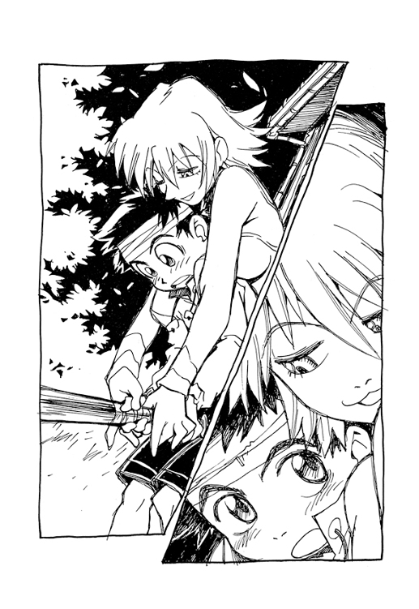
その〝揺れる星〟は、高度三万六千キロメートルの上空にある静止衛星だった。揺れ動いているのは〝直撃〟をうけ、しかも軌道制御装置を破壊されたためだ。
静止衛星は軌道に打ち上げられてから、面内制御という軌道上での加速・減速による微調整を行う。またこの衛星は姿勢誤差修正や軌道変更のための制御装置も備えていた。
しかし今それらの機能がすべて地上からの指令を受けつけず、狂っていたのだ。
それはハルハラ・ハル子のせいなのである。
その人工衛星の様子を二十四時間監視している一室が疎瀬市警察署の地下にあった。
壁には映像モニターとコンピュータスクリーンが並び、数名のオペレーターたちがそこに表示されるデータを手際よく処理している。ここにいる者たちは数週間前からほとんど休みなくこのモニタールームともいうべき一室につめていたが、その身分は警察の職員ではなかった。ただ、作戦のためにこの警察の施設を間借りしているだけである。
「アマラオ管理官、たったいま完全にコントロールを失いました」
一人の女性オペレーターが、部屋の奥に腰かけた上司に報告する。
その報告を受けて小さく舌打ちした上司こそ、昨夜ナオ太の家でパンを買ったあの眉毛の男だった。アマラオ管理官と呼ばれた彼は、実は内閣の特別諮問機関でもある枢密公安組織のメンバーだった。現在この組織は関係者の間で〝特殊入国管理局〟と呼ばれている。
「ＴＴＲ目標追尾レーダー、画像処理可能です」
報告の声と同時にモニター画面のひとつに静止衛星の拡大映像が映し出される。
その衛星のボディにはなんと野球の硬球がめりこんでいた。もちろんそれは昨日の試合で、ハル子が青空に放った場外ホームランのボールである。その場にいたナオ太や選手たちは気付かなかったが、ハル子に打たれた白球はそのまま第一宇宙速度を突破し、この疎瀬市上空の静止衛星を直撃したのである。（なんて非常識な！）
「姿勢制御ノズル、遠隔ジョブ、受信アンテナの一部を損傷させたのち、最終的にはオペレーションユニットに直撃しています」
「大気圏突入マイナス００６０、落下、開始します」
「最終落下予測地点は？」
とアマラオ管理官は深刻な表情で問う。
その深夜。
疎瀬市の市民たちはまだ自分のすぐ頭上に死の脅威が迫っていることも知らず、いつもと同じように安らかに眠っていた。
そしてナンダバ家。
部屋で眠っていたナオ太は、猫の鳴き声に目を覚ます。
見れば、ベランダにミユミユがいる。
しばらくぼんやりとその声を聞いていたが、飼い猫はいきなり鳴きやむと、また気まぐれにどこかへ去っていく。
ナオ太はもういちど眠りにつこうとしたが、ふと頭にむずがゆさをおぼえる。
それは包帯のせいだった。試合のときハル子にボールをぶつけられ、頭に巻いた包帯。でもコブができただけで、もう痛みはなかった。
むずがゆいだけの包帯など取ってしまおうとナオ太は起き上がる。
この頭のデッドボールはやはり意図的なもの、つまり危険球だったかもしれないが、とにかく今回は角が出てこない。
そういえば今夜バッティング練習を終えるとき、ハル子はこの頭を抱えて、やっぱアンタの頭でないとね、とか言ってたっけ。それはおそらくナオ太の頭でないとロボットが出てこない、という意味にちがいない。
ハル子が〝その現象〟めあてでここに居候してることはなんとなく察しがつくが、それでもナオ太はなんだか嬉しかった。とにかく、彼女の目的がナオ太であることは確かだからだ。
──やっぱり、僕はハル子を〝嫌いじゃない〟のかな......。
ふと見れば、しかし二段ベッドの上にそのハル子の姿がないことに気づく。おやすみ、と言って一緒に寝たはずなのに、寝床は空だ。時計を見れば、すでに十二時に近い。
「どこ行ったんだ？」
向かいの父親の部屋から明かりが漏れている。ナオ太は不吉な予感にとらわれる。パン屋は朝が早い。こんな時間に父親が起きてるなんて、まさか......。
嫌な妄想がナオ太の脳裏に浮かぶ。
コノヨナカニハルコガトウサンノヘヤニイル？
だが待てよ、とナオ太は自分に言い聞かせる。ベッドに寝ているはずのハル子の姿がなく、そして向かいの父親の部屋に明かりがついている。考えてみれば、ただそれだけのことである。それがどうした。父親が明かりを消し忘れ、そしてハル子はトイレに行ってるだけかもしれないじゃないか......。
コノヨナカニハルコガトウサンノヘヤニイル？
なにか聞こえた。
ハル子の声だ。
「......もう、だらしないわね」
まちがいなく、それは父の部屋からした。
ナオ太は思わず聞き耳をたて、その場に立ちつくす。
「ハル子さん......ハル子さん......」
という父カモンの喘ぎ声までする。
きいんという耳鳴りが始まる。
「痛い！」
急激な痛みに、思わず頭を抱え込むナオ太。
包帯をつきやぶり、頭からはまた〝角〟がとびだした。
「マーカービーコン確認！」
同時刻、アマラオのモニタールームでオペレーターの女性が声をあげる。
スクリーンのひとつに、激しい波形曲線が表示されている。
その女性がシミュレーターを操作すると、すぐに衛星の落下予想範囲が表示される。
「出ました。左のモニターをごらんください」
アマラオはその画面を見てつぶやく。
「やはり疎瀬か」
「種別、半能動パルス波......〝何か〟が衛星を誘導し、疎瀬への落下をより確実にしようとしています」
「............」
報告を聞いてアマラオ管理官はその不自然に太い眉をひそめた。
そして悪夢のような一夜は、さらなる凶変へと続いていく......。
翌朝、ハル子やカモンの顔を見るのが嫌で、ナオ太はすぐに家を出た。マーシャンズとフラグメンツの第二試合の日だが、もう行く気にはならず、結局また疎瀬橋近くの堤防をぶらぶら歩いているとマミ美と出会った。あいかわらずヒマな女子高生だ。
二人は朝から〝遊び〟をはじめる。
丘の上のＭＭ工場からは白い煙が吐き出されていた。この世界から少しずつ色彩を奪っていく白煙が、今朝もまたゆっくりと街の空に拡散していく。
──毎日毎日、僕は同じ場所で、同じ光景を眺めながら、同じことばかりをくりかえしてるな......。
いつかは、どこかへ行くことができるのだろうか？
マミ美がナオ太の背中に指で文字を書き、それを当てさせるという無邪気なゲームを始めた。最初の文字はカタカナの〝タ〟だった。おそらくその〝タ〟は、タスクのイニシャルだろう。
いつかは、どこかへ。兄タスクのように。
そこにバイクのエンジン音が近づいてきた。
「あ、ハルさんっス」とマミ美が嬉しそうに言う。
顔を見るのが嫌でわざわざ家を出てきたというのに、ハル子のベスパは二人の姿を見つけて近くにとまった。ユニフォーム姿である。これからグラウンドに行くらしい。
「試合はもう始まってるよ。なに不健康なことしてんのさ」
そのときナオ太はマミ美に背後からだっこされていた。たしかに青少年の行いとしてはいささか不健康ではある。けれど、ナオ太はよりによってハル子にそんなことを言われたくはなかった。
ナオ太の頭には、昨日よりもしっかりと巻かれた包帯があった。もちろん、それは〝角〟が出てこないようおさえこんでいるのだ。
おまえこそ昨夜はなにやってたんだよ、とナオ太はもう少しで毒づきそうになる。けれどマミ美に聞かれたくなかったし、いかにも妬いてるようなので、その言葉はのみこんだ。
そんなナオ太の思いも知らずにハル子は言う。
「ほら、健康的にバット振りに行こうぜ」
「タッくん、試合に出てんの？」
マミ美が驚く。
「でも、タッくんは本番ではバットを振らない人っスよね」
そのさりげないひとことにナオ太はまたひっかかった。
本番ではバットを振らない人？
マミ美までがハル子と同じような目で自分を見てるのか？
グラウンドまで乗せてったげる、とハル子が言った。けれどナオ太は口をとがらせたままその申し出を断る。
「いいよ、やらないよ、野球なんて」
「カンチのデビュー戦なのに」
それを聞くとマミ美が目を輝かせて立ち上がった。
「カンチ様が！」
「やつのフィールディングは一見の価値ありだぜ」
「マミ美、見に行くっス」
「......言っとくけど、おまえの昨日のホームランなんて、たいしたことないから」
ほとんど負け惜しみでしかないそんなナオ太の言葉を、二人の女たちはすでに聞いてはいなかった。
「行こう、ハルさん！」
「ＯＫ」
嬉々として背中にしがみつくマミ美を乗せて、ハル子のベスパはさっさと走り去る。
ひとりその場に残されたナオ太は、思わず立ち上がって捨てゼリフを吐く。
「二度とコーチなんて頼まないからな！」
そして手にしたバットを強く握りしめ、結局家に帰る。
そのときは、これから自分が〝父殺し〟をすることなど想像もしていなかった。
帰ってくると家の中は妙に静かだった。
シゲクニとハル子は試合で留守にしていたし、カモンも店にはいなかった。
もうつぶれるなこのパン屋、とか思っていると、奥で物音がした。
廊下に飼い猫のミユミユがいた。
ミユミユは居間の方を睨んでいた。その目が、なんだか妙にあやしく光っている。昔から猫の目は人には見えない物の怪の姿を映すなどと言われてるが、そのときのミユミユの様子は、まさにそんな感じだった。居間にいる化け物を睨んでいるように見えた。
────！
そして、猫のその警戒心をすぐにナオ太も共有する。たしかに居間に何者かが侵入している気配を感じ、思わず手にしたバットを強く握りなおした。
そっとのぞくと──居間にはカモンがひとりで座っていた。
なんだ父さんか、と思ったが、しかし父親はいつもと少し様子が違うようだった。
シャツの胸をはだけて、だらしない格好をしていた。壁にもたれて口をあけている。なんだかいかがわしい雰囲気を感じた。
もちろん昨夜のできごと──ハル子が深夜にカモンの部屋にいたこと──を思い返し、ナオ太は嫌な気分になった。
「おっと」
ナオ太に気付くと、カモンはあらわになりかけた自分の腹部を慌ててシャツで隠した。そしてナオ太の顔を見上げて、勝ち誇ったように得意気に微笑む。
「やだなあ、ハル子さん。〝あと〟はつけないでってあれほど頼んどいたのに......ナオ太君に見られたら、父さん困っちゃう」
「............」
ナオ太は、カモンの腹のあたりを見た。きっとシャツで隠したのはキスマークに違いない。自分の顔がみるみる強張っていくのを感じた。動揺がはっきりと怒りに変わっていく。
さらに挑発するようにカモンは言う。
「ほら、父さんとハル子さん、もうアレの関係だから」
アレの関係。
あからさまに自慢されると、言いようのない悔しさをおぼえた。裏切られた思いだ。
ナオ太の脳裏には、先に会ったのはタッくんだよ、というハル子の言葉が再び浮かんでいた。ちくしょう。そう言ったくせに......。
壁にもたれていたカモンが、よろりと立ち上がろうとする。
「ほら、お腹すいたろ、君の好きな遺伝子組み替え納豆もあるぞ、ナオ太くーん......」
いつもと違うその妙にイントネーションの狂った呼び方が、自分を馬鹿にしているようで癇に触った。そしてどういうわけか、まるで針のとんだレコードのようにカモンは何度もナオ太の名を連呼しはじめる。何度も何度も終わることなく繰り返しはじめた。
「ナオ太くーん、ナオ太くーん、ナオ太くーん......」
うるさい、と怒鳴ったことをナオ太は覚えている。手にはバットを握っていた。金属バット。
そして──スイッチが入ったのはそのときだったらしい。
ＯＮ！
ナオ太は手にしたバットで、目の前にあるテレビをいきなり殴りつけた。
プラスチック枠とブラウン管の砕ける音が大きく響いた。
そう、殴ったのはテレビだった。ただテレビを殴りつけただけなのだ。
それなのに──ぐあ、と父親が奇妙な声をあげた。
まるで首をつかまれたニワトリのような声だった。
見れば、カモンは嫌な角度に首が曲がったまま、目をむいて倒れていた。
──そんな......。
なんとテレビの上にあった真鍮の置き時計がはずみで吹っ飛び、カモンの頭を直撃していたのだ。
さすがにナオ太は息をのみ、思わず一歩あとずさった......。
鉄格子のはまった磨りガラスの窓を見れば、外はまだ真昼の明るさだ。
犯行の一時間後、ナオ太は疎瀬警察署の取り調べ室にいた。殺風景な部屋にひとり待たされていた。
衝撃、きれた小学校六年生、バットで父親を殴りつける！
それが明日の新聞の見出しだろう。
いえいえ、普段はまじめなおとなしい良い子でした、まさかあのナオ太君が、信じられません......。
テレビのワイドショーなんかで、担任のミヤジとかがそんなふうに答えそうだ。
僕はいま父さんを殺して、この取り調べ室にいる。人殺しの罪でここにいる。外はまだ真昼の明るさだ。あれ、今日僕は何時に起きたんだっけ？
なんだか息が苦しかった。だが、それは空調のせいではなく、両目を開いて倒れていたカモンの姿を思うと、うまく呼吸ができなくなってしまうのだ。フラッシュバック。あの父親の屍......。
ちがう、父さんは死んでなんかいない、あの父さんが死ぬもんか、これは悪い夢だ、夢なんだ。人殺し？ バカバカしい。そんなのはテレビドラマの中に出てくる言葉だ。殺人？ それはニュースで聞く言葉だろ。あの父さんが死ぬもんか。タオレタトウサンノシンゾウハウゴイテイナカッタ。いったい僕はどうしちゃったんだ。どうしてこんなことになっちゃったんだ。兄ちゃんやじいちゃんはどんな顔をするだろう。フラッシュバック。両目を開いていた屍......。
僕は殺人を犯した。
ボクハヒトゴロシダ。
やはり昨年書いた作文なんかも週刊誌に掲載されたりするのだろうか？
『将来の夢』──僕は大きくなったら、街を出ていきたいと思っています。それは地方の時代なんて言葉に、どこかうさんくさいものを感じるからです......まずい、もう少しましなことを書いとけば良かった。きっと精神分析の専門家が、少年Ａの秘めた殺意が読み取れますね、とかなんとか解釈するにちがいない。今は何時だろう。どうしてこの部屋には時計がないんだ。僕はどうやってここに来たんだっけ？ どうして僕は今日、学校に行ってないんだ？ そうだ、祭日だからだ。こんなことなら野球の試合に出てればよかった。バッターボックスに立ってればよかった。どうせ立ってるだけなんだから。あれ、どうして僕は今、バットを持ってないんだ？ あれは兄ちゃんにもらった大事なバットなんだ。助けてよ兄ちゃん。息が苦しい。体が重い。すごく重い。今すわってる椅子が、まるでエレベーターのように下降していく。ダレカ、タスケテ......。
取り調べ室の外の廊下を靴音が近づいてくる。
これは私どもの方で処理しますから、という男の声がする。
なんだか聞きおぼえのある声だった。
ドアが開くと、そこにはあの眉毛の男が立っていた。アマラオ管理官である。
──ああ、やっぱりこの男は警察の人間だったんだ......。
アマラオはドアを閉めると、ナオ太の向かいの席に座った。そして背広の内ポケットから電子手帳を取り出し、その表示を読み始める。
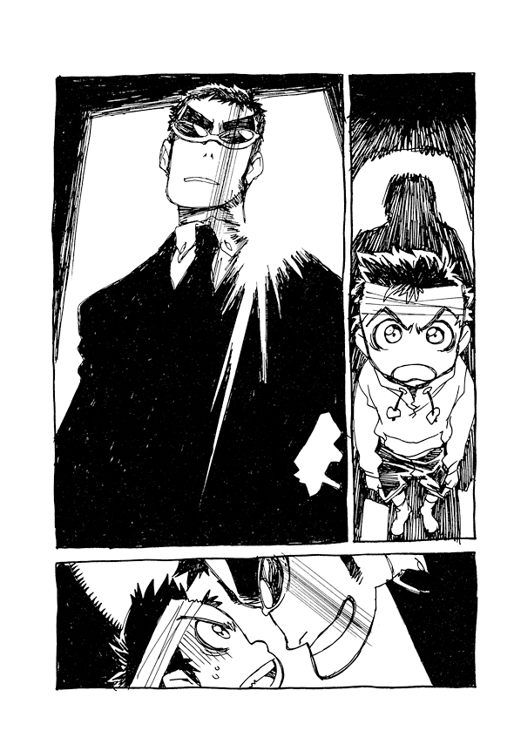
「......ナンダバ・ナオ太。疎瀬小学校六年生。父、ナンダバ・カモン。パン屋経営。四十七歳。十年前までは東京の出版社に勤務。サブカル雑誌の副編集長だった。ひと月ほど前から、ハルハラ・ハル子と名乗る身元不明の女性を自宅に同居させている」
「............」
やはりよく調べている。きっとだいぶ前からナオ太の家のことをさぐっていたのだろう。もちろんハル子を逮捕するために。なのにナオ太の方が殺人を犯し、さぞかし驚いたに違いない。
「バットはまずかったな」とアマラオは言う。「君んちパン屋だろ。せめてあの売れ残りのフランスパンってわけにはいかなかったのか」
「僕は殴ってません」とナオ太は静かに言った。
本当のことである。父親は殴っていない。しかし、それが信用されるとも思ってはいなかった。
痛かったろうな、とつぶやいて、アマラオは傍らのワゴンの上のポットから二人分のコーヒーを注ぎ、ひとつをナオ太に差し出した。
「ほら、甘いの好きだろ」
男はナオ太のカップに角砂糖を次々に入れる。これは拷問の一種かと思ったが、驚くべきことに男は自分のコーヒーにも同じくらい、いや、それ以上の角砂糖を入れ、スプーンでかきまわした。そして、やっぱ甘いのがいいよね、とそのカップを躊躇なく口に運ぶ。
「僕は、テレビを殴っただけです......」
信じてもらえなくても、ナオ太はとりあえず正直に話すことを決意する。
「殴った？」
「だから事故なんです」
「君は」とアマラオは少し真剣な目で言う。「ガードレールしか殴らない畑の人だと思ってたのにな」
「......ナグラナイバタケ？」
混乱したナオ太の頭はさらに混乱する。
なんだ？ ガードレールしか殴らない畑の人っていうのは？
ほとんど飴湯のようなコーヒーをアマラオは平気で飲みほす。
「やっぱり年上はやばいだろ。あんな女を父親と争ってもひきあわないって」
「ハル子は関係ないよ」
「ハル子、か。気安く呼ぶね。仲いいんだ」
「知らないよ」
「君のバッティングコーチだろ。まあ、彼女、ちょっと美人だけどね」
「ハル子は関係ないって言ってるだろ！」
思わず声を張り上げてしまったのは、核心をつかれたからだろうか。
アマラオは少しきつい口調で問う。
「じゃあどうして殴ったんだ？」
「殴ってない」とナオ太は答える。「僕はただテレビを......」
「だからテレビを殴ったんだろ？」
「それは、父さんに......」
「父さんに、なに？ 嫉妬？」
ナオ太は口をつぐんでうつむいた。
「心配しなくてもいい。君は罪には問われない」
「............」
少年法のことを言ってるのだな、とナオ太は思う。ナオ太はまだ十二歳だから。けれど罪を犯したのは事実だ。現行の法律だとどういうことになるのだろう。しかし──
「君も、まあ被害者だ」とアマラオは言う。「ただ、巻き込まれただけのね」
「被害者」とナオ太はつぶやいてみる。
──被害者？ どうして僕が被害者なんだ？
この男はなにか大きな勘違いをしているようだ。直接ではないにせよ、僕が父さんの死に責任があるのはまちがいない。
「なんだ、本当に自分が殺したとでも思ってたのか？」
「............」
「そんなことより、これを見たまえナオ太君」
「......そんなことより？」
そんなことよりってなんだ？
小学生の僕が父親を殺害したという衝撃的な事実以上に、どんな大事なことが今ここにあるというんだ？
アマラオが電子手帳を操作すると、傍らに置かれた小さなテレビモニターに映像がうつった。空だ。そして画面中央には光るものがある。どうやらそれは人工衛星のようだった。拡大画像になると、激しく震動しているように見える。
「こいつはリアル映像だ。今、この街の上空に、人工衛星が落下してくる。それもただの衛星じゃない。これは凄まじい破壊力の衛星爆弾なんだ」
「............」
コノオトコハナニヲイッテルンダ？
この男はなにを言ってるんだ？
ナオ太はコーヒーをひとくち飲んだ。予想以上の凄まじい甘さだったが、ある意味で刺激的な味覚がナオ太の混乱した頭に糖分を補給してくれる。
この男はなにを言ってるんだ？
衛星爆弾？
「爆発すればこの疎瀬市は壊滅する。その意味がわかるかい？ もしそうなったら誰も助からない。いいかい、だれも、たすから、ない。猫の子一匹ね。あ、もちろんいま私の話していることは絶対に内緒だよ。お父さんとかにもだ」
「え」とナオ太は声をあげる。「父さんは、だって......生きてるの？」
「死んでしまうよ、みんな。今からじゃ避難しても誰も助からない」
「............」
ナオ太の頭で再びフラッシュバックする父親の屍。
「だからすぐに帰って、彼女に伝えてほしい。ぜひ場外ホームランをもう一度。〝地元のファン〟が、そう言ってたと」
もちろんその彼女というのはハル子のことだろう。どうやらこの男はハル子と顔見知りらしい。
「どうして、ハル子が......」
「彼女は光域宇宙警察フラタニティの者なんだよ」
「............」
光域宇宙警察、というのがなんなのか、ナオ太はつっこまなかった。どうせ説明されてもわかるようなことではなさそうだ。
ただアマラオの妙に太い眉がまた目についた。それはやはり不自然な眉毛である。
君も被害者だ、とさっきアマラオは言った。被害者とは、あのハル子にひどいめにあわされた被害者、という意味らしい。そして〝君も〟ということは、ナオ太以外にも同じような被害者がいるということだ。
そういえば男はハル子のことを口にするとき、なんだか妙に感情的になるようだ。もしやハル子にひどいめにあわされたその被害者というのは彼自身のことなのかもしれない......。
ナオ太はまだかなり混乱した頭で、そんなことを考えていた。
家に帰ってきたナオ太は、そっと裏庭にまわった。
裏庭はあの〝犯行現場〟の居間につづいている。
おそるおそる庭から居間にあがってみると、あいた障子の向こうに父親の足が見えてギクリとする。思わず立ち止まって凍りつく。
やはり障子一枚むこうには、父親の屍がある。
それも他ならぬ自分が手にかけた死体が......。
近くには凶器となったナオ太のバットが転がっていた。どうやら、自分が飛び出したあと、誰もここには来てないらしい。少なくとも、警察が調べたり現場検証した形跡は見当たらない。
ナオ太はふたたび混乱する。
自分は、正直にすべてを警察で自白した。なのにこうしてあっさりと釈放され帰ってきたわけだ。これはどういう状況なのだろう。もはやクールミントな頭でもその混乱を正すことはむずかしそうだった。
〝自分の目で確かめればいい。君は誰も傷つけていない〟
ナオ太はさきほど警察署を出るとき、あのアマラオと名乗った男に言われた言葉を思い返す。
誰も傷つけていない？
ではこの死体はどうなるんだ？
そのときナオ太の足もとでミユミユが鳴く。場違いにのんびりした猫の鳴き声。
意を決してナオ太は居間に踏みこんでみる。
嫌な角度に首が曲がったままの父カモンの体が横たわっていた。目は見開いたまま不気味に天井を睨みつけ、脈や鼓動を確かめてみるまでもなくその体は息をしていない。
それが、生きたものの姿でないことはあきらかだ。
しかし──。
アマラオの言葉通り、ナオ太が殺人を犯してないのもまた確かなようだった。
なんと、その死体の頭から流れ出しているのは緑色の液体なのだ。発光する液体。どうやらオイルの一種らしい。つまりそこに横たわっているのは人間ではなくアンドロイドなのだ。
アンドロイド。
もちろんそんな非日常的なものをこの家に持ちこんだやつが誰かは考えるまでもない。
「あの家政婦め......」
押し入れで微かな物音がした。その襖を勢いよく開け放ち、ナオ太は驚く。中にはミイラがあった。いや、ミイラのように萎びた男がいた。それはまぎれもなく本物の父カモンらしい。
そのミイラのような父は、ナオ太に向かって力なく笑う。
まだ生きているのだ。
マダイキテイルノダ。
「うおおおおおお......」
ナオ太はその萎びた父の体を無我夢中で抱えると、アンドロイドを廊下に蹴飛ばして障子をぶちやぶり、風呂場に走っていく。
そのときナオ太の脳裏に浮かんだのは、とにかく干しシイタケなどの乾燥食品のイメージだった。はやく水分を与えて〝もどす〟ことだった。
だから浴槽にカモンを沈めると、あわてて蛇口をいっぱいにひねり、父の体に水を浴びせた。
非常識な状況には、いっそ非常識な手段が有効なのかもしれない。あまりにも馬鹿馬鹿しい
〝治療法〟だが、直感的かつ単純なその方法があんがい正鵠を射たらしく、カモンはみるみる復元していった。干からびた皮膚が再生し、血液がめぐりはじめる。
〝もどったカモン〟はつぶやく。
「のど乾いたな......」
ナオ太はホッと一息をつく。
そして気づいた。
いま自分が安堵し、頭の混乱がようやくおさまっていくのは、自分が人殺しでないとわかったからではない。それは罪から逃れた安心感ではなかった。そうではなく、嬉しかったのだ。父親が生きていたことがただ嬉しかったのだ。
たったいままでの自分の混乱は、つまりとつぜん父親がいなくなった欠落を認めることができなかったからだと知る。
「父さん、ハル子さんの役に立てなかったんだ」とカモンは呑気に言う。「頭を貸してくれっていうから喜んでＯＫしたんだけど、しばらく死んじゃってたみたい」
「............」
「いやあ、やっぱりハル子さんは、ただものじゃないなあ」
そしてカモンは湯船の中からナオ太を見上げ、妙に上機嫌な顔になる。
「やはりナオは、ホンモノの父さんが好きか」
そう言う父親が、ナオ太はなんだか憎らしいように思えた。だが、機嫌良くこちらを見ているカモンのそのしたり顔をみていると、悔しいことにそれでも嬉しさをおさえきれなかった。それは不思議に愉快な気分で、ナオ太もわれしらずその父親の微笑みにこたえていた。
トウサンハココニイル。
イキテメノマエニイル。
裏庭でバイクのクラクションが響く。
聞き慣れた音だ。
──あいつめ！
憤ったナオ太はとにかく憎いアンチキショウにひとこと文句を言ってやろうと、風呂場を飛び出す。
だが勢い余って廊下に横たわるアンドロイド・カモンにつまずき、庭に転がってしまった。
「痛て！」
「あぶないなあ、廊下は走るなよ」
庭にはハル子がいた。野球のユニフォーム姿のままベスパにまたがっている。
そのお気楽な顔を見てナオ太は言う。
「この機械のオヤジはなんだよ！」
「ナオ太君ニミラレタラ父サンコマッチャウ......」
傍らに転がったアンドロイドの上半身がいきなり起き上がってしゃべりだす。
ハル子はカモンの模造品を乱暴に蹴飛ばす。アンドロイドはショートして再び倒れる。そのはだけたシャツの腹部は蓋が開き、中の機械が露見している。
〝やだなあ、ハル子さん。〝あと〟はつけないでってあれほど頼んどいたのに......〟
あのとき、そう言って腹部を隠したアンドロイド・カモンの〝あと〟とは、ではキスマークではなくこの開いたパネルのことだったのだ。
ナオ太は思わず苦笑した。そして笑いながら泣きそうになった。
しかし、冷静に考えれば笑ってるときでも泣いてる場合でもない。
不倫する家政婦などより、父親をアンドロイドにすりかえる家政婦の方がよほど危険なのではあるまいか？
「......あなた、本当に何者なの？」
「私はタッくんの少年の日の心の中にいる青春の幻影」
「やかましい」
「タッくん」
「なんだよ」
「先に会ったのは、タッくんだもんね」とハル子は微笑む。
「............」
ナオ太は、そのハル子の笑顔に、またうかつにも一瞬──ほんの一瞬だけ──ときめいてしまった。
──バカ、なに考えてんだ僕は......。
そんな自分の想いを見透かされそうで、あわてて話題を変える。
「知ってるか、人工衛星が落ちてくるって」
今この街の上空に人工衛星が落下してくる、とあのアマラオは言った。それも恐ろしい衛星爆弾で、その危機を阻止できるのはハルハラ・ハル子だけだと。
しかし、すぐ頭上に空爆の危機が迫ってるというのに、そんなものが取るに足りないことのように思えてしまうのはどうしてなんだろう。
「ダブルヘッダーはきついぜ」とハル子は言う。「高くつくって〝地元のファン〟に言っときな」
人工衛星は着実に疎瀬市方面に向かって落下していた。
そいつはただの人工衛星ではなく、また普通の落下でもない。
下降しながら解体していく人工衛星の中から、やがて金属の球体が出現する。核兵器の爆縮レンズにも似たその小型の球体こそが危険な衛星の本体だった。
衛星爆弾。それは簡易重力制御により大気との摩擦を調整しながら目的地に降下する究極の高高度航空爆弾である。そのボディの大半は日本製品だが、信管と重力制御モジュールのパーツだけにはＭＭのロゴが刻まれていた。
あとわずか。疎瀬市の地表に落ちるまで、もうあとわずかである......。
この爆弾は地表に接して動きが１／50秒停止すると爆発するよう設定されていた。
いまだ地下室のモニターでアマラオたちはその衛星爆弾の様子を監視していた。
女性オペレーターの一人が、声をあげて言う。
「フラタニティに抗議すべきです！」
「いや」としかしアマラオは言う。「この衛星爆弾は万一の場合に備えて、我々が用意しておいた保険だ。ラハルはそれを利用しただけさ」
「ラハル？」
「光域宇宙警察員、ハルハ・ラハル。恐い女だろ。彼女はメディカルメカニカと日本政府の外交を牽制する意味で、こいつを起動させたんだよ」
全員口をつぐんでいたが、当然ながら内心では焦燥に駆られていた。実は彼らは使命のために命をかける自己犠牲の精神はあまりもちあわせてはいなかったのだ。もちろん、その地下室はシェルターなどはない。
室内の別のモニターには、二人乗りベスパで疾走するラハル──ハル子の姿が映っていた。そのシートの後ろにはナオ太がしがみついている。
いかにもオマヌケそうなその二人組に自分たちの命がゆだねられている現実に、オペレーターたちの心臓はすでにフリーズ寸前だった。
重力制御の影響で疎瀬市上空の天候は集中的に荒れはじめていた。
そして、とあるマンションの屋上で、その荒れ狂う雲を見上げ、はしゃぐ女子高生がいた。
マミ美である。
その傍らにはカンチもいて、一緒に黒雲の渦を見上げている。
どうしたものかカンチのフェイス・モニターに、降下してくる衛星爆弾の映像がうつる。
それを見てマミ美は感心する。
「おお、恐怖の大ちゃん、大遅刻っスかねえ（大ちゃん、とは大王のことらしい）。こりゃあ、明日は学校おやすみっスかねえ」
カンチはなにも答えなかったが、やがてそのモニター映像は野球グラウンドに到着したハル子とナオ太の姿にきりかわった。
マミ美は訝しげな表情になる。
「タッくん......なにするつもりだろ」
なにするつもりだろ、とグラウンドに着いたナオ太は思った。
ハル子のことだからおそらくまたカンチを利用して衛星爆弾を処理するだろうと思っていたのだ。だが試合の終わった市営グラウンドはまったくの無人で、ロボットの姿はない。
見上げれば上空は厚く黒い雲が激しくうずまき、凄絶な光景が展開している。
それはまるで天界で荒れ狂うどす黒いコールタールの海だ。
そして、その厚い雲の彼方から危険な兵器がまっすぐにこのグラウンドへと近づいてくるのがナオ太には皮膚感覚で感じとれた。
「こっちに向かってきてる......？」
まだ肉眼には捕らえられないが、なにしろ当の衛星爆弾は、正確に言えば疎瀬市ではなくナオ太の額の突起物を目標に落ちてくるのだ。衛星とナオ太の突起物は、いまや明確に呼応する半能動パルス波で呼びあっていた。ナオ太はその恐ろしい事実に気付く。
あれは僕を狙って落ちてくる......僕の頭の脈動があいつをひきよせてるんだ！
「さて......」
ハル子が内ポケットに手を入れる。またぞろ未知の超兵器を取り出すのか──と思えば、それは子供用シャンプーハットだった。入浴時、洗髪に使用するあのまったく平凡な日用品──に見える。
「なに？」
「いいからいいから」
と、ハル子はナオ太の頭の包帯をはぎとる。そして、そのシャンプーハットを手早くナオ太にかぶせると、ハル子はなんとその頭の中に自分の手をつっこんだ。
そう、まさに〝つっこんだ〟のである。
まるで液体の中に入れるように、ハル子の腕はナオ太の頭の中へ、ずぶずぶと挿入されていく。
「わ、ちょっと、バカ、なにしてんだ......」
胃カメラを飲みこむ数百倍の気持ち悪さに、ナオ太は総毛立つ。自分の頭の中、さらには喉を通ってハル子の手が自分の体内を蠢いているのがわかるのだ。こいつの手、殺菌も消毒もしてないよな、とか思った。
まるで糠床桶で漬け物をさがすように、ハル子は遠慮なしに深く手をつっこんでくる。
「......へえ、男の子の中ってこんな感じなんだ」
「こら、そんなとこ裏からさわんな」とシュールな文句をつけるナオ太。
あきらかに彼女は楽しんでいる。
いやらしく微笑むハル子はやがておめあての物をさぐりあてると腕をひき抜く。その手にはなにかメタリックな道具が握られていた。
それは今回ナオ太の頭から出ていたあの〝角〟の本体である。衛星爆弾を引き寄せている突起物だ。どうやら彼女の目的はこれをナオ太の頭から引き抜くことらしいが、しかしその迷惑な道具は、今回もまたすんなりとナオ太の頭からは分離せず、ひっかかっていた。
ハル子はナオ太の頭に乱暴に足をかけ、むりやり引き抜こうとする。
「ほら、早く抜きなさいよ」
「そんなこと言ったって、あせるとかえってダメなんだよ......あ、そんな激しく......」
ポン、と小気味のいい音がしてついに引き抜かれた道具は、ハル子がいつも背にしているあのベースギターによく似ていた。
「......なにそれ？」とナオ太は訊く。
ニヤリと笑ってハル子は答える。
「あんたのバット」
「圏界面突破、高度一万七千メートル──」
地下のモニター室は、すでに緊張が限界にまで達していた。
一般市民と違い、ここにいる者たちはこの被爆予定地にあって、その危険を認識している者たちなのである。接近する衛星の距離がそのまま自分たちの命の残量であることを知っている者たちなのだ。
だが衛星爆弾のコースをトレースしていたアマラオは、ハル子のこととは別に一縷の光明を見出していた。
「これなら助かる......」
それは侵入角度の問題だった。簡易重力制御により多少の速度調整が可能でも、この角度なら大気圏にはじかれて地球から離れていく──はずだった。
けれどその希望はすぐに打ち砕かれる。
衛星は速度調整ではなくその回転により角度を深く変化させたのだ。
思わずアマラオは叫んでいた。
「シンカーか！」
もはや頼みの綱はハル子ことハルハ・ラハルだけである。もし彼女になんらかの秘策がなければ、自分たちを含め疎瀬市民五万人の命は絶たれるのだ。
モニターのいくつかは、グラウンドにいるハル子とナオ太の姿をとらえている。そのハル子はナオ太の頭から、なにか未知の道具をひきだしていた。それはフラタニティのギター型光域空間干渉兵器と酷似した道具だ。
ハル子がその兵器の一流の使い手であることをアマラオは知っていた。
そうか、とアマラオは思う。ではその新兵器で衛星爆弾を弾き飛ばしてくれるのか......。
しかし──
思わず椅子から立ち上がり、アマラオはまた叫んでいた。
「何やってんだ、そんなガキじゃ無理だろ！」
なんたることか、モニターに映ったハル子はこともあろうにその兵器を、ほい、と少年の手に預けてしまったのだ。
俺がバカだった、やはりあのラハルを信用してはいけなかった、とアマラオは拳を机に叩きつける。彼女の悪い癖だ。肝心なときに無駄な遊びをやってしまう。〝あのとき〟もそうだった......。
上司が顔色を失うのを見て、室内のオペレーターたちはみな戦慄した。
もちろんナオ太もまた顔色を失っていた。
なんとハル子はナオ太に落ちてくる衛星を〝打て〟というのである。その手にしたもので迫りくる衛星爆弾を打ち返せ、というのである。非常識ここに極まれり、だ。
ナオ太は見知らぬ武器を手に怯えていたが、ハル子はいつものように余裕で微笑んでいる。
「大丈夫」とハル子は言う。「教えてあげた通りにやればいいから」
「............」
──教えてあげた通り？
いったい何を教わったっけ、とナオ太は懸命に思い返す。
〝それはつまり、僕が自分のことを特別だと思ってるってこと？〟
〝だって特別だって思ってるでしょ。いっそ、なにがあっても絶対バットを振らないなら、ホントに特別だけどね。あんたのは単なる逃げよ。ほら、あの星とか目印にして振ってごらん〟
あの星。
見上げれば、すでに衛星は肉眼で確認できる。どんどん迫ってくる。
もはや逃げ場はない。
まさに振るか、死ぬか、である。
なるほど、とナオ太は心の中でつぶやく。どうせ死ぬなら振るしかないわけだ。そりゃあこの状況で振らなければホントに特別だよ。
だって特別だって思ってるでしょ、とハル子は言った。
でも、とナオ太は思う。これまで自分のことをそれほど特別だと意識していたつもりはなかった。はずだ。たぶん。
──そもそも特別ってなんだ？ 僕が試合でバットを振らなかったのは、どうせ打ち返せないことがわかっていたからだ。それだけのことなのに......。
ワカッタヨボクハトクベツジャナインダロ。
ナオ太はそのギター型の兵器を握ると、ハル子に教わった楽なスタンスのバッティングポーズに構えた。そして迫る衛星を見据える。
客観的に見ればそれは自殺行為でしかないのだが、これまでの経験からハル子が関与するとあらゆる常識が無効となることをすでにナオ太は知っていた。
──やりゃあいいんだろ、やりゃあ......。
知らぬ間にナオ太の性格も彼女からずいぶん影響を受けているのかもしれない。
覚悟を決めて見上げると、奇妙なことに迫ってくる衛星の速度がずいぶんゆっくりに見えた。まるで風船が落ちてくるように、その姿をしっかりととらえることができる。いわゆる〝ボールの縫い目までが見える状態〟である。
──調子がいいってこと？
いける、と体が先に反応する。
ナオ太は振った。
しかもジャストミートで衛星爆弾をとらえた。
直径数メートルの巨大な黒い金属球を、ナオ太は手にした武器の真芯でたたきつけたのだ。
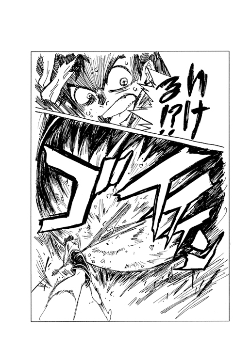
「振りやがった......」
驚愕するアマラオ。
オペレーターたちはみな固唾を飲んでこのスイングを見守っていた。
うりゃあ、とモニターの中で少年は叫んでいる。
そして──
周囲に衝撃波が走り、衛星爆弾は青空の彼方へ消えていく。
本当に打ち返したのだ。
第二宇宙速度を突破して別の惑星まで飛んでいくことが報告され、ようやくモニター室に安堵のため息がもれる。オペレーターたちは上司を信じた互いの判断の正しさをたたえあった。
だが当のアマラオは、ナオ太がバットを振ったことがまだ信じられないようだった。
「あいつ、もしかしたら、本当に父親を殴ったのかな......」
もしアンドロイドといれかわってなければ、少年は父親を殺害していたのだろうか？
アマラオはモニターに映ったナオ太を見つめる。映像の中で、ナオ太はハル子と戯れていた。
ハル子は嬉しそうにナオ太を抱えて、その頭を指でグリグリする。
「やればできるじゃん。じゃんじゃん」
「やめろよ、痛いよ......」
しかしそういうナオ太もまた嬉しそうだ。
手のひらがまだじいんと痺れてるが、とにかくなんかいい感じだった。それはベスパの相乗りでぶっとばしたときの気分に似ている。脳ミソからっぽ状態ってやつだ。
そうか、ハル子はいつもこんな感じで生きてるのかもしれない、とナオ太は思った。
迫りつつある自分の過酷な運命も知らず、今日はまだ大声で笑うナオ太であった。
《フリクリ へ続く。16：25》
鶴巻和哉（『フリクリ』監督）
大人と子供というコトについて考えてみる。
20世紀もやっと終わろうとする現在、子供は誰もがいずれ大人になれるなどと信じてはおるまい。歳をとろうが背が伸びようが税金取られようが結婚しようが大人になれない者はいる。強烈なトラウマによって大人への階段を二段飛ばしで昇ってしまう人もいれば、何か些細なことでよそ見をしているうちに──それはマンガだったりアイドルだったり鉄道だったり妄想だったりするのであるが──階段の横を通り過ぎてしまった人もいるのが、そしてむしろこちらの方が多数を占めているのかもしれないのが、西暦２０００年のわたくしたちなのである。
法律どおりに誰でも二十歳になった途端大人になれるといいのであるが、そうはいかない。そういうわたくしも二十歳になった夜は中古で買った「ドラクエ」の画面を前にしてメタルスライムのクリティカルヒットを浴び、カッと来てリセットしていたわけである。大人ならリセットはしない。それは子供のみに許された「たんま！たんま！」的ズルであるからだ。もしエロゲーもできるアダルトファミコンを発売する際には、リセットボタンはナシにしていただきたい。現実でリセットの効かない人生を歩んできた大人には、ゲームにおいてもその苦難を経験する義務と権利があると思うからだ。
というわけで、具体的事例があると大人と子供の区別がつきやすいとわかった。試してみよう。
「ＢＯＭＢ」を毎月購入。問題なく「子供」である。善き大人にとって「ＢＯＭＢ」は「コロコロ」よりも子供的なものである。これは臭いで比べるとよくわかる。イカくさいよりも乳臭いほうが大人的であることは北方謙三先生も言っておられた通りである（言ってません）。しかし、これが三十歳を過ぎても......となると別の問題が発生する。わたくしの仕事場には七つ机があるが、うち四つの机に「ＢＯＭＢ」が置いてあったりするのはいかがなものであろうか？ 「いや、リリーさんのコラムが読みたいからさ」と逃げても無駄であるし、大人の必殺技「領収書」を貰っていてもダメである。というか更にイタい。近所のサンクスには毎月七、八冊の「ＢＯＭＢ」が平積み（！）されるのであるが、これはコンビニ店の入荷量としては日本一ではないか？などと、経済を語ってみてもやはり「子供」なのである。それでも納得いかないという方は、ホンジョだシャクだと中途半端なことを言わず、正直に末永遥や長澤まさみあたりを目当てにすべきであろう。ロリコンは大人が子供を愛でるという真に「大人」的変態行為だからである。
ちょっと口調がかたいような気がしてきたので変えてみる。こういう臨機応変なのはちょっと「大人」っぽい。
コカ・コーラダイエットが好き。これはね、もう「大人」。ほら大人である自分を演出したい子供はペプシコーラ的なものを選ぶでしょ。ポテチでいうところのコイケヤ的なものだったり、ジーンズでいうところのＬＥＥ的なものだったり、ＭＳでいうところのドム的なものだったりするわけだけど、ここで王道であるコカ・コーラをチョイスするのは「大人」的。しかもね、同じ値段でありながらカロリーゼロというなんか損してる？的なコカ・コーラダイエットがどの程度ダイエットのためになるのか？ コカ・コーラダイエットを飲むとダイエットできるわけではなく、ダイエットの邪魔になりづらいだけですよっていうささやかな前向きさがＣＯＯＬ。王道だけでいくのは大人ではあるけれど、気づかないうちにオヤジ的になってたりするから、ダイエットっていうマイナスの付加価値をつけて調節してみよう。ただね、ひねり過ぎてファンタ、しかもグレープだったりすると今度は「大人のくせに何かこうオチャメぶってる自分」的になるので注意しとけ。お母さんは騙せても、サブカル少女はそういうとこ見逃さないからね。
なんか「いっこうに『フリクリ』の話にならないじゃないか」という方。申し訳ない。
あのね、辛いの。何を書いていいのかわからんもの。自分で原作やってるアニメの脚本家のノベライズを監督として解説するというのは、ちゃんとした大人でも辛いんじゃあないのかな？ 錯綜しすぎで本書に対しての立場が自身でも曖昧になってしまう、わたくしの大江健三郎的じゃない曖昧な解説。こういう様々な曖昧なことを読み解いていってこそ「フリクリ」が理解できるのではないか？と大人の榎戸さんも言ってたぞ。ウソ。
フリクリ
榎戸洋司
企画・原作/GAINAX
角川スニーカー文庫
平成22年8月1日 発行
発行者 井上伸一郎
発行所 株式会社角川書店
〒102-8078 東京都千代田区富士見2-13-3
http://www.kadokawa.co.jp/
(C)ji ENOKIDO 2010 (C) 1999 GAINAX